第 18 章 并发控制
第 17 章介绍了事务的一项基本性质：隔离性。但多个事务在数据库中并发执行时，隔离性可能遭到破坏。系统必须控制并发事务之间的相互影响，所采用的机制统称为并发控制方案。本章讨论并发事务的管理，暂不考虑故障；第 19 章再介绍故障恢复。
并发控制有多种方案，各有优点，没有一种在所有方面都最好。实际系统最常使用两阶段锁和快照隔离。
18.1 基于锁的协议
保证隔离性的一种方法，是要求互斥访问数据：一个事务正在访问某数据项时，其他事务不能修改它。最常用的实现方式是，事务只有持有数据项上的锁，才能访问该项。17.9 节已介绍锁的概念。
18.1.1 锁
锁有多种模式。本节先讨论两种：
- 共享模式（S）：Tᵢ 获得 Q 的共享锁后，可以读 Q，但不能写 Q。
- 排他模式（X）：Tᵢ 获得 Q 的排他锁后，可以读写 Q。
每个事务都必须根据对 Q 执行的操作，向并发控制管理器请求适当模式的锁。
只有管理器授予锁后，事务才能继续执行相应操作。两种模式允许多个事务同时读一个数据项，但同一时刻只允许一个事务写入。
更一般地，可以为一组锁模式定义相容函数。假设 Tⱼ 已持有 Q 的 B 模式锁，另一个事务 Tᵢ 请求 Q 的 A 模式锁。如果仍能立即授予 Tᵢ，就称 A 与 B 相容。图 18.1 用矩阵 comp 表示这种关系：当且仅当 A、B 相容时，comp(A, B) 为 true。
图 18.1 锁相容矩阵 comp。
| 已持有／请求 | S | X |
|---|---|---|
| S | true | false |
| X | false | false |
共享锁与共享锁相容，与排他锁不相容。不同事务可以同时持有同一项的共享锁；后来的排他锁请求必须等已有共享锁全部释放。
事务用 lock-S(Q) 申请共享锁，用 lock-X(Q) 申请排他锁，用 unlock(Q) 释放 Q 上的锁。
访问 Q 前必须先加锁。若其他事务已持有不相容模式的锁，管理器暂不授予新锁，请求者必须等待所有不相容锁释放。
事务可释放此前获得的锁，但访问数据项期间必须持有相应锁。即使已经完成最后一次访问，也未必应立即释放，否则可能无法保证可串行化。
继续看第 17 章的银行例子。T₁ 从账户 B 向账户 A 转账 50 美元，见图 18.2；T₂ 显示两账户总额 A + B，见图 18.3。
图 18.2 事务 T₁。
T1: lock-X(B);
read(B);
B := B − 50;
write(B);
unlock(B);
lock-X(A);
read(A);
A := A + 50;
write(A);
unlock(A).
图 18.3 事务 T₂。
T2: lock-S(A);
read(A);
unlock(A);
lock-S(B);
read(B);
unlock(B);
display(A + B).
设 A、B 初始余额分别为 100、200 美元。不论串行顺序是 T₁、T₂ 还是 T₂、T₁，T₂ 都应显示 300 美元。但并发执行可能产生图 18.4 的调度 1，T₂ 错误地显示 250 美元。原因是 T₁ 过早释放了 B 的锁，T₂ 看到了不一致状态。
图中不仅列出事务动作，也列出管理器授予锁的时刻。事务发出锁请求后，必须等获准才能执行下一动作，因此授锁发生在请求与下一动作之间。具体发生在这个区间的何处并不重要，可以视为紧邻下一动作之前。
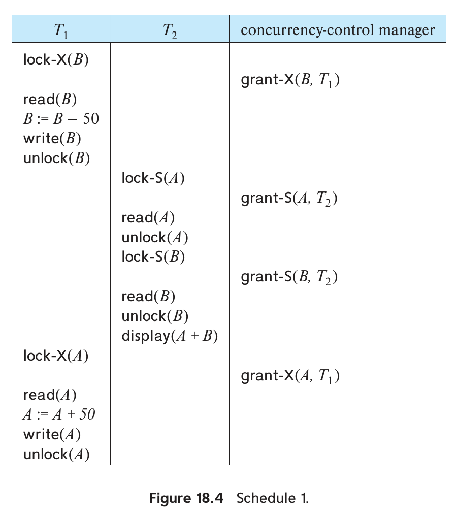
图 18.4 调度 1。右列为并发控制管理器，grant-S、grant-X 表示授予共享锁、排他锁；时间从上向下推进。
本章后面的调度图省略管理器这一列，读者可据此推知授锁时刻。
现在把解锁推迟到事务末尾。图 18.5 的 T₃ 对应延迟解锁后的 T₁，图 18.6 的 T₄ 对应延迟解锁后的 T₂。
可以验证，T₃、T₄ 不再允许调度 1 那种导致总额为 250 美元的读写次序。虽然还可以形成其他调度，但 T₄ 都不会输出不一致结果，原因稍后说明。
不过，加锁可能造成死锁。图 18.7 中，T₃ 持有 B 的排他锁，T₄ 请求 B 的共享锁，只能等待 T₃；同时 T₄ 持有 A 的共享锁，T₃ 请求 A 的排他锁，只能等待 T₄。两个事务都无法继续正常执行。发生死锁后，系统必须回滚其中一个事务。
图 18.5 事务 T₃：将 T₁ 的解锁推迟到末尾。
T3: lock-X(B);
read(B);
B := B − 50;
write(B);
lock-X(A);
read(A);
A := A + 50;
write(A);
unlock(B);
unlock(A).
回滚后，该事务持有的锁被释放，另一个事务就可取得数据并继续执行。18.2 节将进一步讨论死锁处理。
不加锁，或读写后过早释放锁，可能产生不一致；持锁再申请其他锁，则可能发生死锁。18.1.5 节将介绍一些可以避免死锁的情况。通常，为防止不一致，使用锁就需要承担死锁的风险。死锁可通过回滚处理；不一致状态却可能引发数据库无法挽回的现实后果，因此前者更可接受。
每个事务都必须遵守规定何时加锁、何时解锁的规则，称为加锁协议。它限制允许出现的调度。
图 18.6 事务 T₄：将 T₂ 的解锁推迟到末尾。
T4: lock-S(A);
read(A);
lock-S(B);
read(B);
display(A + B);
unlock(A);
unlock(B).
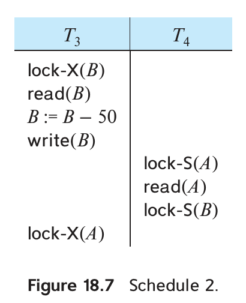
图 18.7 调度 2。T₃、T₄ 分别等待对方释放锁，形成死锁。
协议允许的调度只是全部可串行化调度的真子集。接下来介绍几种仅允许冲突可串行化调度、从而保证隔离性的协议，先定义相关术语。
设调度 S 包含事务集合 {T₀, T₁, …, Tₙ}。若某项 Q 先被 Tᵢ 以 A 模式加锁，后被 Tⱼ 以 B 模式加锁，且 comp(A, B) = false，就称 Tᵢ 在 S 中先于 Tⱼ，记为 Tᵢ → Tⱼ。在任何等价串行调度中，Tᵢ 都必须排在 Tⱼ 前。这与 17.6 节检测冲突可串行化的优先图相似：操作冲突对应锁模式不相容。
若 S 可由遵守某协议的一组事务产生，就称 S 在该协议下合法。当且仅当全部合法调度都冲突可串行化，亦即对应的 → 关系都无环，才称协议保证冲突可串行化。
18.1.2 授予锁
申请某模式的锁时，只要其他事务未持有冲突锁，理论上即可授予。但要避免一种情况：T₂ 持有共享锁，T₁ 请求排他锁并等待；随后 T₃ 请求共享锁，与 T₂ 相容而获准。T₂ 释放后，T₁ 仍要等 T₃；接着 T₄ 又可能在 T₃ 释放前获得共享锁。如此不断有新事务取得共享锁，每个都只短暂持有。
结果却可能是 T₁ 永远得不到排他锁，无法取得进展。这称为饥饿。
为避免饥饿，Tᵢ 请求 Q 的 M 模式锁时，仅在以下条件都满足时授予：
- 没有其他事务持有与 M 冲突的 Q 上的锁。
- 没有更早请求 Q 的锁、仍在等待的其他事务。
这样，较晚提出的请求就不会一直阻挡较早的请求。
18.1.3 两阶段锁协议
两阶段锁协议（two-phase locking，2PL）保证可串行化，要求每个事务分两个阶段申请和释放锁：
- 增长阶段：可以获取锁，不能释放任何锁。
- 收缩阶段：可以释放锁，不能再取得新锁。
事务开始时处于增长阶段，按需要加锁。一旦释放任何锁，就进入收缩阶段，此后不能再申请锁。
例如，T₃、T₄ 符合两阶段要求，T₁、T₂ 不符合。解锁不必全部放在事务末尾：把 T₃ 的 unlock(B) 移到 lock-X(A) 之后，仍满足两阶段要求。
事务取得最后一把锁的时刻，即增长阶段末尾，称为锁点（lock point）。按锁点先后排列事务，就得到它们的一种串行化顺序，因此两阶段锁保证冲突可串行化。证明留作练习 18.1。
两阶段锁不保证无死锁。T₃、T₄ 都遵守协议，却在图 18.7 中死锁。
17.7.2 节还要求调度避免级联回滚，但普通两阶段锁做不到。图 18.8 中各事务都遵守 2PL；若 T₅ 在 T₇ 执行 read(A) 后失败，T₆、T₇ 都会被迫级联回滚。
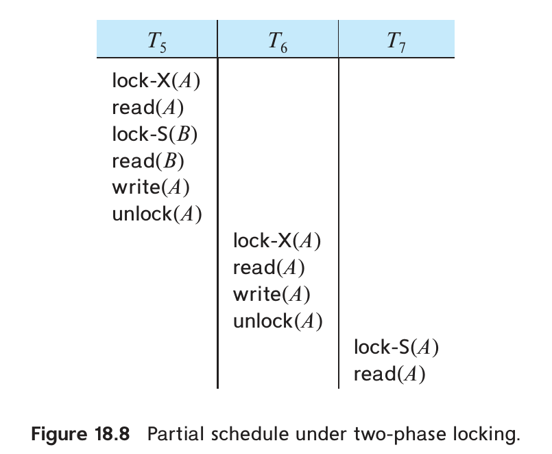
图 18.8 两阶段锁下的部分调度。未提交事务的写入仍可能被其他事务读取，引发级联回滚。
严格两阶段锁协议（strict 2PL）可以避免级联回滚。除满足两阶段要求外，事务取得的全部排他锁必须保持到事务结束（提交，或中止并完成撤销）。未提交事务写入的数据因而一直受排他锁保护，其他事务无法读取。
另一种变体是强严格两阶段锁协议（rigorous 2PL），要求全部锁都保持到事务结束。可以验证，这时事务能按提交顺序串行化。
考虑下面两个事务，只列出部分主要读写操作：
T8: read(a1);
read(a2);
...
read(an);
write(a1).
T9: read(a1);
read(a2);
display(a1 + a2).
若采用基本两阶段锁，T₈ 需要以排他模式锁住 a₁，二者的并发执行效果便相当于串行执行。但 T₈ 实际只在最后写 a₁ 时需要排他锁。
若最初先取得共享锁，稍后再转为排他锁，T₈、T₉ 就能同时读取 a₁、a₂，提高并发程度。
因此，可在基本 2PL 上加入锁转换：用 upgrade 将共享锁升级为排他锁，用 downgrade 将排他锁降级为共享锁。但转换也有阶段限制：升级只能发生在增长阶段，降级只能发生在收缩阶段。
图 18.9 展示允许锁转换后 T₈、T₉ 的并发执行；这个不完整调度只列出部分锁指令。
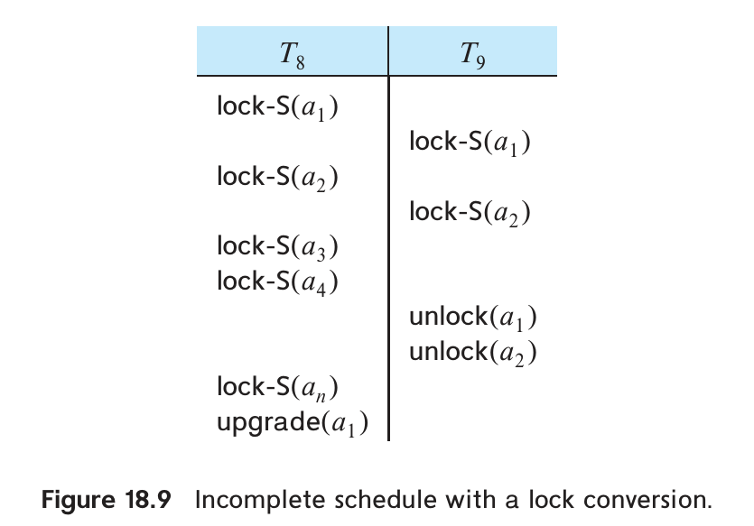
图 18.9 共享读取后，T₈ 用 upgrade(a₁) 升级锁。
升级也可能等待：若其他事务仍持有 Q 的共享锁，申请升级的事务就不能立即获得排他锁。
允许锁转换的两阶段锁同样只产生冲突可串行化调度，事务仍按锁点串行化。若排他锁保持到事务结束，调度也不会发生级联回滚。
有些冲突可串行化调度无法由 2PL 产生。若希望采用非两阶段加锁且仍保证冲突可串行化，就需要关于事务的额外信息，或对数据库数据项施加结构、顺序约束。本章后面介绍其他加锁协议时会给出例子。
商业数据库广泛采用支持锁转换的严格 2PL 和强严格 2PL。
一种简单且常见的做法，是根据事务的读写请求自动生成锁指令：
- Tᵢ 发出
read(Q)时，先执行lock-S(Q)，再读取。 - Tᵢ 发出
write(Q)时，先检查它是否已持有 Q 的共享锁；若有，执行upgrade(Q)后写入，否则执行lock-X(Q)后写入。 - 事务提交或中止后，释放其全部锁。
18.1.4 锁的实现
锁管理器可实现为接收事务消息、发送回应的进程。对于锁请求，返回授锁消息，或在死锁时要求回滚；对于解锁消息，只需回复确认，但释放锁也可能使另一个等待事务获准。
它为每个当前被锁住的数据项维护请求链表，按到达顺序存放，每条记录包含事务、请求模式以及是否已获准。以数据项名为键的散列表用于查找对应链表，称为锁表。
图 18.10 的锁表包含 I₄、I₇、I₂₃、I₄₄、I₉₁₂ 五项数据。散列冲突用溢出链处理，因此一个散列表入口可连接多个数据项；每个数据项又有已获准或正在等待的事务列表。深色框表示已授锁，浅色框表示等待，为简洁省略了锁模式。例如，T₂₃ 已取得 I₉₁₂、I₇ 的锁，正等待 I₄。
虽然图中未画出，锁表还应按事务标识符建立索引，以便高效找出某事务持有的全部锁。
锁管理器按以下方式处理请求。
- 收到锁请求时，在数据项已有链表末尾添加记录；若没有链表，就新建一个，仅包含本次请求。
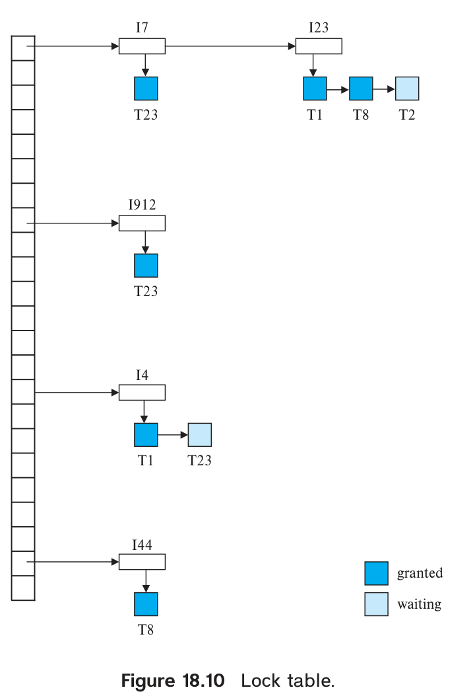
图 18.10 锁表。granted 表示已授予，waiting 表示等待；散列表连接数据项，数据项再连接对应事务的请求队列。
数据项尚未加锁时直接授予；已有锁时，仅在请求与全部已授锁相容，且此前请求均已获准的情况下授予，否则等待。
- 收到解锁消息后，删除该事务在数据项请求链表中的记录。再检查后续记录能否获准，能则授锁，并继续检查下一条。
- 事务中止时，先删除它尚在等待的请求；数据库完成相应撤销动作后，再释放其全部锁，撤销见 19.3 节。
由于较早请求仍在等待时不会批准后来的请求，这种算法能防止锁请求饥饿。18.2.2 节介绍死锁检测与处理。20.3.1 节还介绍用共享内存代替消息传递实现请求、授锁的方法。
18.1.5 基于图的协议
18.1.3 节指出，非两阶段协议需要关于事务访问方式的额外信息。不同模型提供的信息多少不同；最简单的模型要求预先知道数据项的访问顺序。借助这个顺序，可以构造不遵循两阶段规则、却仍保证冲突可串行化的协议。
在全部数据项集合 D = {d₁, d₂, …, dₕ} 上规定偏序 →。若 dᵢ → dⱼ，任何同时访问两者的事务都必须先访问 dᵢ，再访问 dⱼ。顺序可来自数据的逻辑或物理组织，也可专为并发控制规定。
偏序使 D 可以表示为有向无环图，称为数据库图。为简便，本节只讨论有根树，并介绍仅使用排他锁的树协议。更复杂的图加锁协议见在线文献说明。
树协议只允许 lock-X，每个事务对同一项至多加锁一次，并遵守：
- 第一把锁可以加在任意数据项上。
- 此后，只有当前持有 Q 父结点的锁时，才能锁 Q。
- 随时可以释放锁。
- 已经加锁又解锁的数据项，不能再次加锁。
树协议允许的全部调度都冲突可串行化。
考虑图 18.11 的数据库图。下面四个事务均遵守树协议，仅列出加锁、解锁动作：
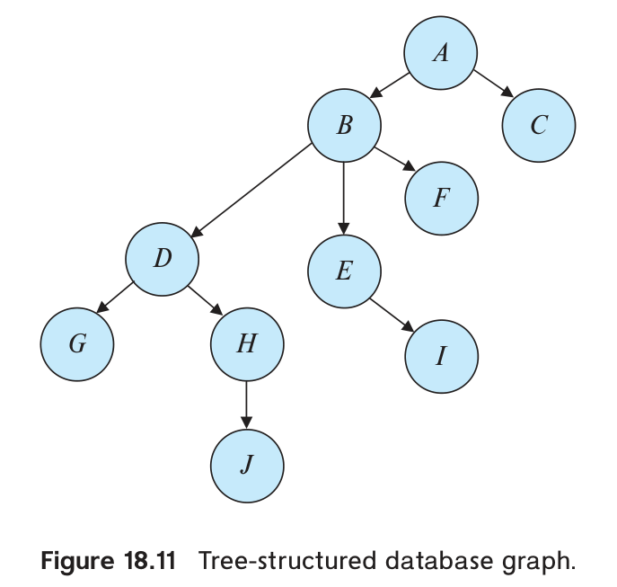
图 18.11 树形数据库图。字母标识数据项，边表示父子关系。
T10: lock-X(B); lock-X(E); lock-X(D); unlock(B); unlock(E);
lock-X(G); unlock(D); unlock(G).
T11: lock-X(D); lock-X(H); unlock(D); unlock(H).
T12: lock-X(B); lock-X(E); unlock(E); unlock(B).
T13: lock-X(D); lock-X(H); unlock(D); unlock(H).
图 18.12 是这四个事务的一种调度。执行期间，T₁₀ 会同时持有两个不相交子树上的锁。
该调度冲突可串行化。事实上，树协议不仅保证冲突可串行化，还保证没有死锁。
不过，树协议不保证可恢复性，也不保证无级联回滚。可以规定排他锁一律持有到事务结束，同时保证这两项性质，但会降低并发程度。另一种并发更高、只保证可恢复性的方法是记录提交依赖：每项未提交数据都记录最后写入者；Tᵢ 读取该值时，记录它依赖该写入事务提交。只有所有依赖事务都提交，Tᵢ 才能提交；其中任何一个中止，Tᵢ 也必须中止。
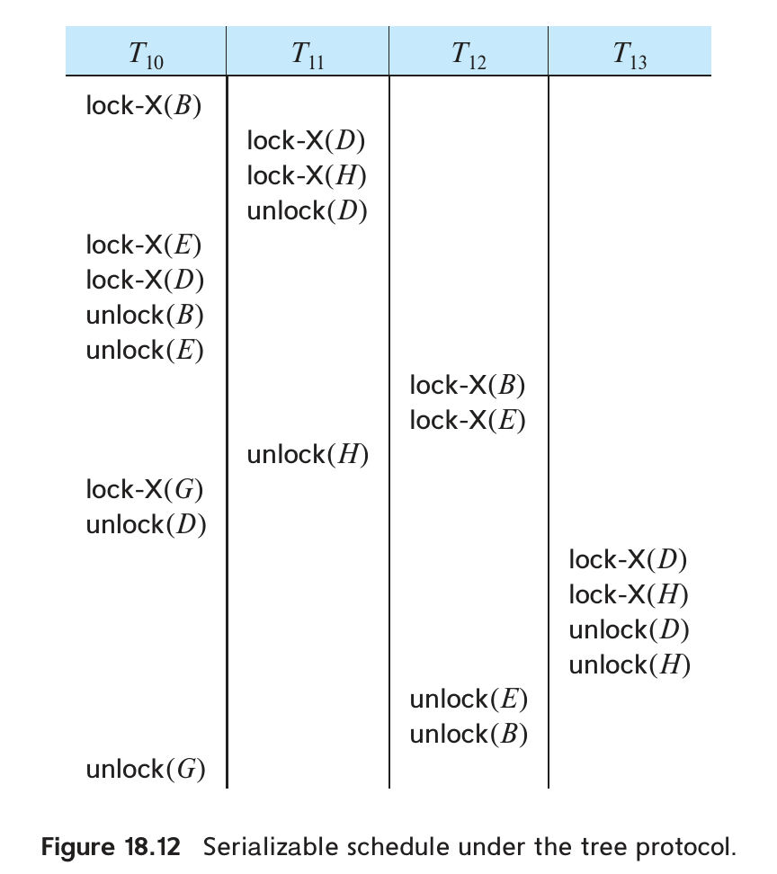
图 18.12 树协议下的可串行化调度。四列对应 T₁₀～T₁₃，动作按时间从上向下执行。
相比两阶段锁，树协议不会死锁，因此无须因死锁而回滚；它还允许较早释放锁，可能缩短等待并提高并发程度。
缺点是可能不得不锁住并不访问的数据。例如，在图 18.11 中访问 A、J，除这两项外还要锁 B、D、H。这增加加锁开销与等待，可能降低并发程度。此外，如果事先不知道要访问哪些项，就可能必须先锁根结点，并发程度会明显下降。
树协议也无法产生所有冲突可串行化调度。两阶段锁允许的某些调度不被树协议允许，反过来也一样，相关例子见习题。
18.2 死锁处理
若一组事务中，每个事务都在等待另一个事务释放数据项，这组事务便处于死锁状态。具体说，存在事务集合 {T₀, T₁, …, Tₙ}，T₀ 等待 T₁，T₁ 等待 T₂，依此类推，而 Tₙ 又等待 T₀。环中的事务都无法继续。
系统必须让其中一个或多个事务回滚，释放其持有的锁，使其他事务能够执行。回滚也可以只做一部分：撤销到某个较早位置，只要释放的锁足以解除死锁即可。
处理死锁有两种主要办法：死锁预防通过协议保证系统不会进入死锁；死锁检测与恢复允许死锁出现，随后识别并解除。两种办法都可能使事务回滚。死锁出现概率较高时适合预防；否则，检测与恢复通常效率更高。
死锁处理的代价包括：维护必要信息、运行检测算法，以及恢复时丢弃事务已经完成的工作。
18.2.1 死锁预防
预防方法有两类：一类规定加锁顺序，或要求事务一次取得全部锁；另一类在等待可能造成死锁时，让事务回滚。
最简单的办法要求事务在执行前一次取得需要的全部锁：要么全部授予，要么一个也不授予。但事务往往难以提前知道将访问哪些数据；即使能够预知，过早取得暂时用不到的锁，也会长时间占用资源，降低利用率。
另一种办法规定数据项的访问顺序。前述树协议就是借助数据项上的偏序避免死锁。
还可以在数据项上规定全序，并结合两阶段锁：事务已经请求某个数据项的锁后，就不能再请求排在它前面的数据项。
若事务预先知道所需数据项，就容易按这个顺序申请锁。这只改变锁请求的先后次序，仍可沿用两阶段锁机制。
另一组方法允许抢占资源：Tⱼ 请求 Tᵢ 持有的锁时，必要时让 Tᵢ 回滚。系统用计数器或时钟为每个事务分配唯一时间戳，以决定等待还是回滚；实际并发控制仍依靠锁。事务重启时保留原时间戳。
等待—死亡（wait-die）采用非抢占策略。Tᵢ 请求 Tⱼ 持有的数据项时，只有 Tᵢ 更老，即 TS(Tᵢ) < TS(Tⱼ)，才允许等待；较年轻的 Tᵢ 必须回滚。
例如，T₁₄、T₁₅、T₁₆ 的时间戳分别为 5、10、15。T₁₄ 请求 T₁₅ 持有的数据时可以等待；T₁₆ 请求 T₁₅ 持有的数据时则要回滚。
伤害—等待（wound-wait）采用抢占策略。Tᵢ 请求 Tⱼ 持有的数据项时，若 Tᵢ 较年轻，即 TS(Tᵢ) > TS(Tⱼ)，就等待；否则，较老的 Tᵢ 会使 Tⱼ 回滚。
沿用上例，T₁₄ 请求 T₁₅ 持有的数据时，T₁₅ 回滚并释放资源；T₁₆ 请求 T₁₅ 持有的数据时则等待。
两种方法都可能让本来不会造成死锁的事务回滚。
还有一种实用方法是超时：事务等待锁超过规定时限后，系统就使其回滚并重启。它介于死锁预防和死锁检测之间。
超时容易实现。若事务都很短，长时间等待往往意味着死锁，效果通常不错。但时限过长会延迟解除死锁，过短又会造成不必要的回滚。
超时还可能使事务反复回滚而发生饥饿，因此适用范围有限。
18.2.2 死锁检测与恢复
未采用死锁预防协议的系统，需要定期运行算法，检查是否出现死锁。
系统必须维护资源分配与尚未获准请求的信息，用算法判断是否存在死锁，并在检测到死锁时实施恢复。
下面分别讨论检测与恢复。
18.2.2.1 死锁检测
用等待图 G = (V, E) 表示事务等待关系。顶点集合 V 是当前事务，边 Tᵢ → Tⱼ 表示 Tᵢ 正在等待 Tⱼ 持有的数据项。
Tᵢ 申请的数据项被 Tⱼ 持有时，在图中加入这条边；只有 Tⱼ 不再持有 Tᵢ 等待的数据项，才能删除这条边。
等待图存在环，当且仅当系统发生死锁。因此，系统周期性地查找等待图中的环即可。
图 18.13 中，T₁₇ 等待 T₁₈ 和 T₁₉，T₁₉ 等待 T₁₈，T₁₈ 等待 T₂₀。
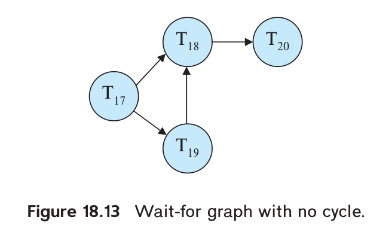
图 18.13 等待图中没有环，因而没有死锁。
这个图不含环，系统没有死锁。
若 T₂₀ 又请求 T₁₉ 持有的数据，就加入 T₂₀ → T₁₉，得到图 18.14。此时出现环 T₁₈ → T₂₀ → T₁₉ → T₁₈，这三个事务发生死锁。
检测算法多久运行一次，取决于死锁发生的频率，以及死锁会影响多少事务。
死锁频繁时应更频繁地检测。发生死锁的事务会继续持有数据，阻挡其他事务，死锁涉及的事务还可能增多。最积极的做法是在每次锁请求无法立即获准时都运行检测。
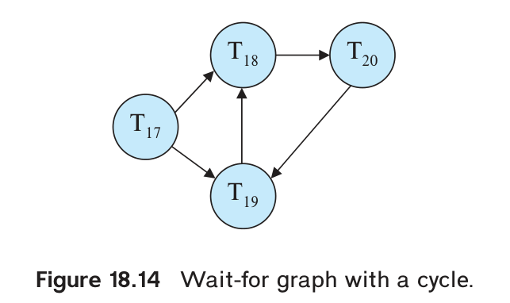
图 18.14 T₁₈、T₁₉、T₂₀ 构成等待环。
18.2.2.2 从死锁中恢复
检测到死锁后，系统必须回滚一个或多个事务。恢复需要解决三个问题。
选择牺牲者。 应尽量选择回滚代价最低的事务，但代价难以精确计算，可以综合考虑以下因素：
- 事务已经执行的时间，以及预计还需执行多久；
- 已经使用的数据项数量；
- 继续执行还需要的数据项数量；
- 需要一同回滚的事务数量。
回滚到哪里。 选定事务后，还需决定回滚范围。
最简单的办法是完全回滚，撤销事务后重新启动。更有效的办法是部分回滚，只退到足以解除死锁的位置。这需要记录事务的锁请求、授锁和更新操作。检测器先决定释放哪些锁，再把事务退回到这些锁中最早取得的一把锁之前，撤销其后的全部操作。恢复机制必须支持部分回滚，事务执行机制也必须能够从适当位置继续。相关方法见在线参考资料。
避免饥饿。 若总按最低代价选牺牲者，同一事务可能反复被选中，始终无法完成。应保证事务只会被牺牲有限次，例如把此前回滚的次数纳入代价计算。
18.3 多粒度加锁
前面把每个数据项视为独立的加锁单位。实际系统还需要支持不同大小的数据单位。
事务若要访问整个关系，逐个给元组加锁会消耗大量时间和锁表空间；只给关系加一把锁更合适。但只访问少量元组的事务若锁住整个关系，又会妨碍其他事务。
多粒度加锁允许把数据单位组织成嵌套层次：非叶结点代表其全部后代数据。这里的树表示包含关系，与前面在独立数据项上规定访问次序的树协议不同。
图 18.15 有四层：数据库、区域、文件、记录。每个文件属于一个区域，每条记录属于一个文件。
事务显式地给某结点加共享锁或排他锁，就隐式地以相同模式锁住其全部后代。例如，给 Fc 加排他锁，就同时保护 Fc 中的所有记录。
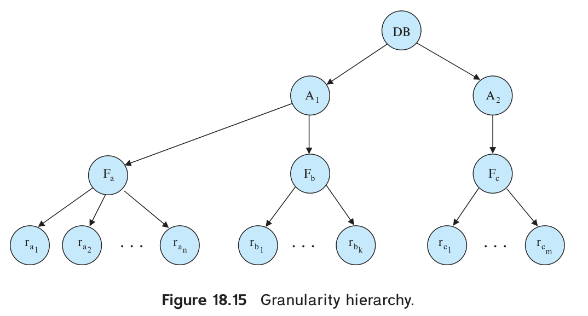
图 18.15 数据库包含区域，区域包含文件，文件包含记录。
这些记录无需再逐条显式加排他锁。
再设 Tᵢ 已显式锁住文件 Fb，Tⱼ 想给其中的记录 rb6 加锁。为判断是否相容，可以沿数据库根结点到 rb6 的路径，检查祖先结点上是否已有不相容的锁。
原书前例使用 Fc，此处改用 Fb；这里将后一段作为新的假设，以免误解为同一个文件。
反过来，Tₖ 想锁住整个数据库时，也必须发现 Tᵢ 在 Fb 上的锁。若为此遍历整棵树，就失去了多粒度加锁的好处。为此引入意向锁：锁住细粒度结点 Q 之前，先在根到 Q 的祖先路径上加意向锁，让上层结点记录“下面已有锁”的事实。
意向共享锁（IS）表示后代将取得共享锁；意向排他锁（IX）表示后代将取得排他锁，也可以取得共享锁；共享意向排他锁（SIX）同时共享锁住整个子树，并允许在更低层取得排他锁。五种模式的相容关系如下。
| 已持有的锁 / 请求的锁 | IS | IX | S | SIX | X |
|---|---|---|---|---|---|
| IS | 相容 | 相容 | 相容 | 相容 | 不相容 |
| IX | 相容 | 相容 | 不相容 | 不相容 | 不相容 |
| S | 相容 | 不相容 | 相容 | 不相容 | 不相容 |
| SIX | 相容 | 不相容 | 不相容 | 不相容 | 不相容 |
| X | 不相容 | 不相容 | 不相容 | 不相容 | 不相容 |
图 18.16 多粒度加锁的相容矩阵。
多粒度加锁协议规定了这些锁的取得和释放规则。
- 按图 18.16 的相容矩阵授锁。
- 必须先锁根结点，可以使用任意模式。
- 给结点 Q 加 S 或 IS 锁之前，必须已经持有其父结点的 IX 或 IS 锁。
- 给 Q 加 X、SIX 或 IX 锁之前，必须已经持有其父结点的 IX 或 SIX 锁。
- 事务一旦释放过锁，就不能再取得新锁，即遵守两阶段规则。
- 只有事务不再锁住 Q 的任何子结点时，才能释放 Q 的锁。
取得锁时自顶向下，释放锁时自底向上。这个协议仍可能发生死锁。
以图 18.15 为例：
- T₂₁ 读取 ra2：先给数据库、A₁、Fa 加 IS 锁，再给 ra2 加 S 锁。
- T₂₂ 修改 ra9：先给数据库、A₁、Fa 加 IX 锁，再给 ra9 加 X 锁。
- T₂₃ 读取 Fa 的全部记录：先给数据库、A₁ 加 IS 锁，再给 Fa 加 S 锁。
- T₂₄ 读取整个数据库：给根结点加 S 锁。
T₂₁、T₂₃、T₂₄ 可以并发执行。T₂₂ 可以与 T₂₁ 并发，但不能与 T₂₃ 或 T₂₄ 并发。
多粒度加锁兼顾并发程度与加锁开销，适合短事务和长事务混合的负载：短事务访问少量数据项，生成报表等长事务则可能扫描整个文件。
系统可以根据 SQL 执行计划估计所需锁的粒度：扫描整个关系时直接加关系锁；通过索引只扫描少量记录时，先加意向锁，再锁具体元组。如果元组锁过多、锁表空间紧张，可以进行锁升级（lock escalation），用一把较粗粒度的关系锁替代许多细粒度锁。这里的“升级”指粒度变粗，与 S 转 X 的锁模式升级不同。
18.4 插入、删除与谓词读取
此前只考虑读写操作，事务只能访问数据库中已经存在的数据项。有些事务还要创建或删除数据，因此增加两种操作：
delete(Q)：从数据库删除数据项 Q。insert(Q)：向数据库插入新数据项 Q，并赋予初值。
Q 被删除后再执行 read(Q)，或者尚未插入 Q 就读取它，都会使事务出现逻辑错误；删除不存在的数据项也同样如此。
18.4.1 删除
要分析删除对并发控制的影响，先确定它与哪些操作冲突。设调度 S 中相邻的 Iᵢ、Iⱼ 分别来自事务 Tᵢ、Tⱼ，且 Iᵢ = delete(Q)，考察下列 Iⱼ。
read(Q)：二者冲突。先删后读会使 Tⱼ 出错，先读后删则能完成读取。write(Q)：二者冲突。先删后写会使 Tⱼ 出错，先写后删则能完成写入。delete(Q)：二者冲突。谁后执行删除，谁就发生逻辑错误。insert(Q)：二者冲突。若 Q 原本不存在，先删后插会使 Tᵢ 出错。
最后一种情形中，先插后删不会出错。若 Q 原本存在，则先插后删会出错，先删后插不会出错。
由此可得：两阶段锁协议要求在删除 Q 前先取得其排他锁；时间戳排序协议则需执行类似写操作的检查。若 Tᵢ 发出 delete(Q)，检查如下。
- 若 TS(Tᵢ) < R-timestamp(Q)，说明一个时间戳更大的事务已读过 Tᵢ 要删除的 Q，拒绝删除并回滚 Tᵢ。
- 若 TS(Tᵢ) < W-timestamp(Q)，说明一个时间戳更大的事务已写过 Q，同样拒绝删除并回滚 Tᵢ。
- 否则执行删除。
18.4.2 插入
insert(Q) 与 delete(Q) 冲突，也与 read(Q)、write(Q) 冲突：数据项尚不存在时，无法读取或写入。
插入会给 Q 赋值，所以并发控制把它当作类似写入的操作：
- 两阶段锁协议中，Tᵢ 执行
insert(Q)后取得新数据项 Q 的排他锁。 - 时间戳排序协议中，把 Q 的 R-timestamp 和 W-timestamp 都设为 TS(Tᵢ)。
18.4.3 谓词读取与幻读现象
设 T₃₀ 在大学数据库中执行以下查询，需要访问 instructor 中所有物理系教师的元组：
select count(*)
from instructor
where dept_name = 'Physics';
另一个事务 T₃₁ 执行插入：
insert into instructor
values (11111, 'Feynman', 'Physics', 94000);
考虑包含 T₃₀、T₃₁ 的调度 S，二者之间存在潜在冲突：
- 若 T₃₀ 的计数包含 T₃₁ 新插入的元组，它就读到了 T₃₁ 写入的值；等价串行调度中，T₃₁ 必须排在 T₃₀ 前。
- 若计数不包含新元组，等价串行调度中，T₃₀ 必须排在 T₃₁ 前。
第二种情形中，两个事务没有访问任何共同元组，却仍存在冲突，可以说它们在一个“幻影元组”上冲突。只按元组进行并发控制就无法发现这种关系，可能放过不可串行化的调度。这就是幻读现象（phantom phenomenon）。
更新也会造成幻读。17.10 节中，Tᵢ 用索引只查找 dept_name = 'Physics' 的元组，没有读取其他系的元组。若 Tⱼ 把其他系的一名教师改到物理系，二者同样没有访问共同元组，却发生冲突。一般说，谓词读取会与插入或更新操作冲突，因为后者使新元组或更新后的元组满足该谓词。
要避免这个问题，T₃₀ 必须能阻止其他事务插入新的物理系教师，也要阻止其他事务把已有教师的系名改成 Physics。
查找全部物理系教师时，T₃₀ 必须搜索整个 instructor 关系，或至少搜索该关系的某个索引。前面把事务访问的数据项默认为元组，但这里还涉及“关系中有哪些元组”这一信息：T₃₀ 读取它，T₃₁ 修改它。
因此，除了锁住访问的元组，还必须锁住用于找到这些元组的信息。
一种实现方式是为关系关联一个专用数据项，用来表示查找元组所需的信息。像 T₃₀ 这样的读取事务对它加共享锁。
像 T₃₁ 这样的修改事务则对它加排他锁。这样，两事务就会在实际数据项上发生锁冲突。类似地，用索引查找元组的事务也必须锁住索引。
这个专用数据项上的锁，与多粒度协议中锁住整个关系的含义不同：它只阻止其他事务改变“关系中有哪些元组”的信息，具体元组仍需分别加锁。某事务持有这个专用数据项的排他锁时，直接访问已有元组的另一个事务仍可能取得元组锁。
锁住这个专用数据项或整个索引，并发程度都较低：即使两个事务插入的是不同元组，也不能并发执行。
更好的办法是采用索引加锁，避免锁住整个索引。插入元组必须更新关系上的全部索引，因而可以通过索引的加锁协议消除幻读。下面只讨论 B⁺ 树索引。
第 14 章介绍过，每个搜索键值都对应一个索引叶结点。查询通常通过一个或多个索引访问关系，插入则必须更新所有索引。假设 instructor 的 dept_name 上有索引，T₃₁ 必须修改包含 Physics 的叶结点；T₃₀ 查找物理系教师时也读取该叶结点，二者便在叶结点上冲突。
索引加锁协议利用这种关系，把幻读转成叶结点上的锁冲突。规则如下。
- 每个关系至少有一个索引。
- 事务必须先通过一个或多个索引找到元组，再访问它们。在这个协议中，关系扫描视为扫描某个索引的全部叶结点。
- 点查询或范围查询都必须对访问到的全部索引叶结点加共享锁。
- 插入、删除、更新元组时，必须更新该关系的全部索引，并对受影响的叶结点加排他锁。插入涉及插入后包含该搜索键的结点，删除涉及删除前包含该搜索键的结点；更新涉及原来包含旧键值的结点和修改后包含新键值的结点。
- 像通常那样给元组加锁。
- 遵守两阶段锁规则。
这个协议没有讨论索引内部结点的并发控制。18.10.2 节将介绍减少索引锁冲突的技术。
叶结点锁会阻止该结点上的全部更新，即使更新与查询谓词并无冲突。18.10.2 节还将介绍键值锁，用来减少这类无必要的冲突。
如 17.10 节所述，这样一来，事务是否冲突似乎取决于底层查询执行方式，而用户看到的事务含义并未改变。另一种办法是对查询谓词直接加共享锁，例如 instructor 上的 salary > 90000。插入或删除时检查相应元组是否满足该谓词；若满足，就必须等待谓词锁释放。更新则要检查元组修改前后的值。这些操作会改变谓词选中的元组集合，不能与持有共享谓词锁的查询并发。该协议称为谓词加锁1。原书指出，它比索引加锁实现成本高，额外收益有限，因而实际系统通常不采用这种完整实现。
18.5 基于时间戳的协议
前面的锁协议在运行时决定冲突事务的先后关系：两个事务首次请求不相容的锁时，顺序才确定。另一种办法是预先规定事务的串行化顺序，最常见的是时间戳排序。
18.5.1 时间戳
每个事务 Tᵢ 开始执行前，都获得唯一且固定的时间戳 TS(Tᵢ)。后来进入系统的事务 Tⱼ 获得更大的时间戳，即 TS(Tᵢ) < TS(Tⱼ)。有两种简单实现。
- 使用系统时钟：事务的时间戳取它进入系统时的时钟值。
- 使用逻辑计数器：每分配一个时间戳后递增计数器，事务取进入系统时的计数值。
时间戳决定串行化顺序。若 TS(Tᵢ) < TS(Tⱼ)，系统产生的调度必须等价于 Tᵢ 在 Tⱼ 之前的串行调度。
每个数据项 Q 关联两个时间戳：
- W-timestamp(Q)：成功执行过
write(Q)的事务中的最大时间戳。 - R-timestamp(Q)：成功执行过
read(Q)的事务中的最大时间戳。
每次执行新的读写操作时，相应更新这些时间戳。
18.5.2 时间戳排序协议
时间戳排序协议确保冲突的读写操作按事务时间戳顺序执行。
Tᵢ 请求 read(Q) 时：
- 若 TS(Tᵢ) < W-timestamp(Q)，它需要的旧值已经被覆盖，拒绝读取并回滚 Tᵢ。
- 若 TS(Tᵢ) ≥ W-timestamp(Q)，允许读取，并令 R-timestamp(Q) = max(R-timestamp(Q), TS(Tᵢ))。
Tᵢ 请求 write(Q) 时：
- 若 TS(Tᵢ) < R-timestamp(Q)，较新的事务已经读过 Q；按时间戳顺序，它当时应当读到本次将产生的值，但系统已按“这个值不会再产生”处理，因此拒绝写入并回滚 Tᵢ。
- 若 TS(Tᵢ) < W-timestamp(Q)，Tᵢ 要写的是过时值，同样拒绝写入并回滚 Tᵢ。
- 否则执行写入，并令 W-timestamp(Q) = TS(Tᵢ)。
事务因上述读写检查而回滚时，系统分配一个新时间戳后重新启动它。
例如，T₂₅ 显示账户 A、B 的余额总和：
T25: read(B);
read(A);
display(A + B).
T₂₆ 从 B 转出 50 美元到 A，再显示二者余额总和：
T26: read(B);
B := B − 50;
write(B);
read(A);
A := A + 50;
write(A);
display(A + B).
下面假设事务在执行第一条指令前立即获得时间戳。图 18.17 的调度 3 中，TS(T₂₅) < TS(T₂₆)，这个调度可以由时间戳协议产生。
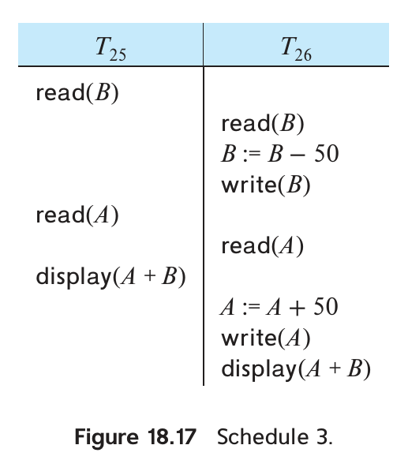
图 18.17 调度 3：按时间戳顺序处理冲突操作。
两阶段锁也能产生这个调度。不过，两种协议允许的调度集合互不包含：有些 2PL 调度无法由时间戳协议产生，反过来也一样，见习题 18.27。
时间戳排序协议保证冲突可串行化，因为冲突操作均按时间戳顺序处理。
事务从不等待，因此不会死锁。但长事务可能被一连串冲突的短事务反复迫使重启，发生饥饿。遇到这种情况，可暂时阻止冲突事务执行，让长事务有机会完成。
基本协议可能产生不可恢复的调度，可通过以下办法扩展：
- 把全部写操作集中到事务末尾执行，以保证可恢复且无级联回滚。写入期间，其他事务不得访问已经写入的数据项，使整组写入具备所需的原子性。
- 采用有限的加锁：读取未提交数据的操作必须等到写事务提交，亦可保证可恢复且无级联回滚，见习题 18.28。
- 若只要求可恢复，可以跟踪未提交写入。Tᵢ 只有在它读到的每个值所属的写事务都提交后才能提交，具体可用 18.1.5 节的提交依赖。
若时间戳协议只应用于元组，仍会遭遇 17.10、18.4.3 节讨论的幻读问题。
可以把事务读取的全部数据都纳入时间戳协议，包括关系元数据与索引。类似索引加锁的做法，把每个索引结点也视为数据项，维护读写时间戳并执行相同检查。这样即使存在谓词读取，也能避免幻读并保证可串行化。
18.5.3 Thomas 写规则
下面修改时间戳协议，以允许更多并发。考虑图 18.18 的调度 4。T₂₇ 先开始，故设 TS(T₂₇) < TS(T₂₈)。T₂₇ 的 read(Q) 和 T₂₈ 的 write(Q) 都成功；随后 T₂₇ 申请写 Q。
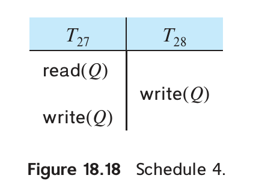
图 18.18 调度 4：较新的事务先写入，较旧事务的写入已经过时。
此时 W-timestamp(Q) = TS(T₂₈)，所以 TS(T₂₇) < W-timestamp(Q)。基本时间戳协议会拒绝 T₂₇ 的写入并使它回滚。
这个回滚可以避免：T₂₈ 已经写入 Q，T₂₇ 想写的值不再需要被读取。时间戳小于 TS(T₂₈) 的事务若读取 Q，会因版本过新而回滚；时间戳大于 TS(T₂₈) 的事务则应读 T₂₈ 写入的值，不该读 T₂₇ 这个过时值。
因此可以在某些情况下直接忽略过时写入。这个修改称为 Thomas 写规则；读操作的规则不变，Tᵢ 执行 write(Q) 时按以下顺序检查。
- 若 TS(Tᵢ) < R-timestamp(Q)，较新事务已经读过 Q，本次写入会使它之前的读取不正确；拒绝写入并回滚 Tᵢ。
- 否则，若 TS(Tᵢ) < W-timestamp(Q)，这次写入已经过时，直接忽略。
- 否则执行写入，并令 W-timestamp(Q) = TS(Tᵢ)。
差别就在第二步：基本协议会回滚事务；Thomas 规则在 TS(Tᵢ) ≥ R-timestamp(Q) 的前提下，只忽略过时写入。
忽略这些写入后，Thomas 规则可以接受某些不满足冲突可串行化、但仍然正确的调度。它们满足视图可串行化，见注 18.1。这个方法相当于从事务中删除过时写操作，因而能接受其他协议无法产生的某些可串行化调度。
例如，图 18.18 的调度 4 不满足冲突可串行化，无法由两阶段锁、树协议或基本时间戳协议产生。采用 Thomas 规则时，忽略 T₂₇ 的 write(Q)，所得调度与串行顺序 ⟨T₂₇, T₂₈⟩ 视图等价。
18.6 基于验证的协议
在只读事务占多数的负载中，事务冲突可能很少。许多事务即使不受并发控制约束，执行后也能保持一致性。并发控制本身却有代码执行开销，还可能延迟事务，因此值得考虑开销较低的办法。难点在于无法提前知道哪些事务会冲突，仍需监测执行情况。
验证协议把事务执行分成三个阶段，只读事务省略第三阶段：
- 读阶段：读取数据库中的数据，保存在事务的局部变量中。所有写操作只修改临时局部变量，不改动实际数据库。
- 验证阶段：检查事务能否进入写阶段而不破坏可串行化。验证失败则中止事务。
- 写阶段：验证成功后，把局部变量中的写入结果复制到数据库。
每个事务必须依次经历这些阶段，不同事务的阶段则可以交错。
为执行验证，为 Tᵢ 记录三个时间戳：
- StartTS(Tᵢ)：开始执行的时刻。
- ValidationTS(Tᵢ)：读阶段结束、验证阶段开始的时刻。
- FinishTS(Tᵢ)：写阶段结束的时刻。
注 18.1：视图可串行化
还有一种比冲突等价宽松的等价关系，同样只考察事务的读写操作。设 S、S′ 包含同一组事务；满足以下三个条件时，称二者视图等价。
- 对任意 Q，若 Tᵢ 在 S 中读取 Q 的初值，在 S′ 中也必须读取 Q 的初值。
- 若 Tᵢ 在 S 中读到的 Q 来自 Tⱼ 的某次
write(Q)，在 S′ 中也必须读到 Tⱼ 同一次写操作产生的值。 - 对任意 Q，在 S 中最后写入 Q 的事务，在 S′ 中也必须是最后写入 Q 的事务。
前两个条件保证各事务读到相同的值，从而完成相同计算；第三个条件与前两个条件一起，保证最终系统状态相同。
若一个调度与某个串行调度视图等价，就称它视图可串行化。
例如，在调度 4 中加入 T₂₉，得到下面的调度 5。
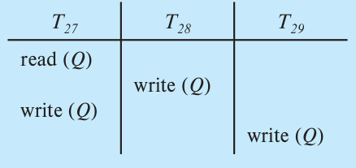
调度 5 中，T₂₇ 读初值，三个事务交错写入，T₂₉ 最后写 Q。
调度 5 与串行调度 ⟨T₂₇, T₂₈, T₂₉⟩ 视图等价：唯一的 read(Q) 都读取初值，最后写 Q 的也都是 T₂₉。
冲突可串行化调度一定视图可串行化，反过来不一定。调度 5 就不满足冲突可串行化：每对相邻指令都冲突，无法通过交换相邻的不冲突指令把它变成串行调度。
T₂₈、T₂₉ 没有先读 Q 就直接写 Q，这类操作称为盲写（blind write）。任何视图可串行化但不满足冲突可串行化的调度，都包含盲写。
验证条件
回到验证协议。用 TS(Tᵢ) = ValidationTS(Tᵢ) 确定串行化次序：若 TS(Tⱼ) < TS(Tₖ)，产生的调度必须等价于 Tⱼ 先于 Tₖ 的串行调度。
验证 Tᵢ 时，对每个 TS(Tₖ) < TS(Tᵢ) 的事务 Tₖ，至少满足以下一项：
- FinishTS(Tₖ) < StartTS(Tᵢ)。Tₖ 在 Tᵢ 开始前已经结束，自然符合串行顺序。
- Tₖ 的写集与 Tᵢ 的读集没有交集，而且 StartTS(Tᵢ) < FinishTS(Tₖ) < ValidationTS(Tᵢ)。两者写阶段不重叠，Tₖ 的写入不影响 Tᵢ 的读取，Tᵢ 也不会影响 Tₖ 的读取，故仍符合串行顺序。
再看 T₂₅、T₂₆，设 TS(T₂₅) < TS(T₂₆)。图 18.19 的调度 6 可以通过验证。T₂₆ 通过验证后才实际写数据库，因此 T₂₅ 读到 A、B 的旧值，调度可串行化。
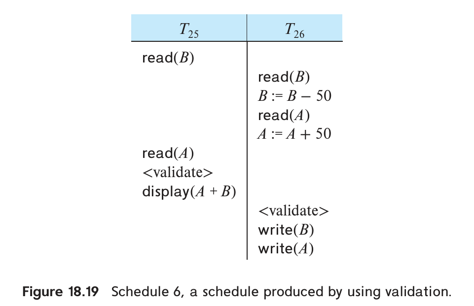
图 18.19 验证协议产生的调度 6。validate 表示验证操作。
实际数据库写入只在事务通过验证、确定提交后进行，因此该方案不会级联回滚。但长事务仍可能因一连串短事务冲突而反复重启；必要时应暂时阻止冲突事务执行，让长事务完成。
验证时只需检查在 T 开始后才结束、而串行顺序排在 T 之前的事务。T 开始前已结束的事务可以忽略；排在 T 之后的事务也暂不检查，等它们验证时，若执行时间与 T 重叠，再由它们检查 T。
这种方案称为乐观并发控制：事务先执行，假设最后能够通过验证。锁和基本时间戳排序则属于悲观方案，检测到冲突时便等待或回滚，即使相应调度仍有可能满足冲突可串行化。
也可以用 StartTS 代替 ValidationTS 来确定顺序，仍能保证可串行化。但后开始的 Tᵢ 可能先进入验证，而更早的 Tⱼ 尚未完成，此时 Tᵢ 必须等待，直到 Tⱼ 的完整读写集确定。使用 ValidationTS 可以避免这个问题。
18.7 多版本方案
前面的协议通过延迟操作或中止事务保证可串行化。例如，需要的值尚未写出时，读操作要等待；需要的旧值已被覆盖时，读操作被拒绝，事务必须中止。保留旧数据副本可以避免其中一些问题。
多版本并发控制使每次 write(Q) 创建 Q 的新版本。读取 Q 时，由并发控制器选择合适版本，选择规则必须保证可串行化。从性能上看，还必须能快速确定应读哪个版本。
18.7.1 多版本时间戳排序
把 18.5 节的时间戳协议扩展到多版本：事务开始前仍获得唯一且固定的 TS(Tᵢ)。
每个 Q 保留版本序列 ⟨Q₁, Q₂, …, Qₘ⟩，每个版本 Qₖ 包含三个字段：
- Content：该版本的值。
- W-timestamp(Qₖ)：创建此版本的事务时间戳。
- R-timestamp(Qₖ)：成功读取此版本的事务中的最大时间戳。
Tᵢ 写入并创建 Qₖ 时，Content 保存写入值，读写时间戳都初始化为 TS(Tᵢ)。之后 Tⱼ 读取 Qₖ，若 TS(Tⱼ) 大于当前 R-timestamp(Qₖ)，就更新读时间戳。
对 Tᵢ 的读写请求，先选出 Q 的一个版本 Qₖ：其写时间戳是所有不大于 TS(Tᵢ) 的写时间戳中的最大值。协议如下。
- Tᵢ 执行
read(Q)，返回 Qₖ 的内容。 - Tᵢ 执行
write(Q)：若 TS(Tᵢ) < R-timestamp(Qₖ)，回滚 Tᵢ；否则，若 TS(Tᵢ) = W-timestamp(Qₖ)，覆盖 Qₖ；其余情况创建新版本。
原书第三种情况的括注写为 TS(Tᵢ) > R-timestamp(Qₖ)。按前两项的分支逻辑，这里应涵盖“未触发回滚且不是覆盖本事务原版本”的情况，包括 TS(Tᵢ) = R-timestamp(Qₖ) 时创建新版本。
第一条规则让事务读到时间上位于自己之前的最新版本。第二条规则拒绝“来得太晚”的写入：若其他事务已经读过旧版本，而按顺序本应读到 Tᵢ 即将写入的新值，就不能再允许这次写入。
写时间戳为 t 的版本 Qᵢ，其有效区间定义如下：若它是最新版本，区间为 [t, ∞]；否则，若下一版本的写时间戳为 s，区间为 [t, s)。时间戳为 tᵢ 的事务读取的，就是有效区间包含 tᵢ 的版本。
不再需要的版本可以删除。设 Qₖ、Qⱼ 的写时间戳都早于系统中最老事务的时间戳。
那么，二者中较旧的版本以后不会再被读取，可以删除。
多版本时间戳排序的一个优点是：读请求永不失败，也不需要等待。数据库通常读多写少，这一点很有价值。
它也有两个缺点。首先，读取数据还要更新读时间戳，可能需要两次磁盘访问。其次，事务冲突通过回滚解决，代价可能比等待更高。18.7.2 节给出缓解办法。
基本的多版本时间戳方案不保证可恢复性和无级联回滚；可以像基本时间戳协议那样扩展，以满足这些要求。
18.7.2 多版本两阶段锁
多版本两阶段锁结合多版本与两阶段锁的优点，并区分只读事务和更新事务。
更新事务采用强严格两阶段锁：全部锁保持到事务结束，故可按提交顺序串行化。每个数据版本只有一个时间戳，它来自提交时递增的计数器 ts-counter，不必使用实际时钟。
只读事务开始前读取 ts-counter，作为自己的时间戳。读取时采用多版本时间戳规则：选择时间戳不大于 TS(Tᵢ) 的最新版本。
更新事务读取数据时，先取得共享锁，再读最新版本；写入时，先取得排他锁，再创建并写入新版本。新版本的时间戳暂设为 ∞，比任何实际时间戳都大。
更新事务 Tᵢ 完成操作后进入提交处理，同一时刻只允许一个更新事务执行这一步：先把它创建的全部版本时间戳设为 ts-counter + 1，再把计数器加 1，然后提交。
Tᵢ 成功提交前，只读事务仍看到旧计数值。Tᵢ 提交后开始的只读事务会看到它的更新；此前开始的只读事务仍看到更新前的版本，两者都无需等待锁。
多版本两阶段锁还保证调度可恢复且不会级联回滚。
旧版本的删除方式类似前述方法：若 Qₖ、Qⱼ 的时间戳都不大于当前最老只读事务的时间戳，二者中较旧的版本就可以删除。
注 18.2：多版本与数据库实现
若主键约束原先通过“每个主键值只能有一条物理记录”实现，引入多版本后就必须调整。同一记录的两个版本可能具有相同主键，但在逻辑数据库的同一时刻，它们不会同时有效，并不违反主键约束。实现应允许同一逻辑记录的不同版本共享主键。
删除元组可以创建一个带特殊删除标记的新版本，仍按通常方法设置时间戳。事务读到这个有效版本时跳过元组。
再看外键。r.B 引用 s.B 时，如果 r 中存在 tᵣ，满足 tᵣ.B = tₛ.B，删除 s 中的 tₛ 或更新其主键通常会违反外键约束。多版本情况下，若删除或更新事务的时间戳为 tsᵢ，还要检查该 tᵣ 版本的有效区间是否包含 tsᵢ；有效的引用才构成相应约束冲突。
若 r.B 上有索引，同一记录的多个版本具有相同 B 值，索引可以只指向最新版本，由它链接到旧版本。但更新 B 值时，索引必须同时保留旧键与新键的入口，分别对应不同版本。回收旧版本时，也要删除不再需要的旧索引项。
18.8 快照隔离
快照隔离已被许多商业和开源数据库采用，包括 Oracle、PostgreSQL 和 SQL Server。17.9.3 节作过介绍，本节详细说明其实现。
从概念上看，事务开始时取得数据库的一份快照，随后在这个快照上执行，不受并发事务影响。快照只包含已提交事务写入的值。这对只读事务很合适：并发控制器既不会让它们等待，也不会将其中止。
更新事务之间可能冲突，提交前必须验证。验证通过前，更新保存在事务私有工作区中；通过后才写入数据库。
事务 T 转为已提交状态与写入全部更新，在逻辑上必须是一个原子动作。其他事务取得的快照，要么包含 T 的全部更新，要么一个也不包含。
18.8.1 快照隔离中的多版本
每个事务有两个时间戳：StartTS(Tᵢ) 是开始时刻，CommitTS(Tᵢ) 是请求验证的时刻。
可以使用实际时钟，只要不同事务获得的时间戳不重复；通常使用计数器，并在事务进入验证阶段时递增。
更新数据项会创建一个新版本。每个版本只有一个写时间戳，取创建它的事务的 CommitTS(Tᵢ)。因为验证后才实际更新数据库，此时提交时间戳已经可用。2
Tᵢ 读取数据时，返回时间戳 ≤ StartTS(Tᵢ) 的最新版本。它能看到开始前已提交事务的更新，看不到开始后才提交的更新，于是读到开始时的数据库快照。3
18.8.2 更新事务的验证步骤
两个并发事务可能更新同一个数据项，却因各自使用私有快照而看不到对方的更新。如果两者都写回数据库，后写入的结果就覆盖先写入的结果，造成丢失更新。快照隔离有两种防范办法：先提交者胜出（first committer wins）和先更新者胜出（first updater wins）。两者都要检查并发事务。
若 Tⱼ 在 Tᵢ 开始到进入验证阶段之间的某个时刻仍处于活动或部分提交状态，就称 Tⱼ 与 Tᵢ 并发。
形式化地说，至少满足下列条件之一：
- StartTS(Tⱼ) ≤ StartTS(Tᵢ) ≤ CommitTS(Tⱼ)；
- StartTS(Tᵢ) ≤ StartTS(Tⱼ) ≤ CommitTS(Tᵢ)。
采用先提交者胜出时，Tᵢ 进入验证并获得 CommitTS 后，执行下列检查。为便于说明，假设同一时刻只验证一个事务，实际实现可以并发验证。
- 检查某个并发事务是否已经更新了 Tᵢ 将要写入的数据项。对写集中的每个 d，查看是否存在时间戳介于 StartTS(Tᵢ) 与 CommitTS(Tᵢ) 之间的版本即可。4
- 若存在，Tᵢ 中止。
- 若不存在，Tᵢ 提交，并把更新写入数据库。
发生写冲突时，最先通过检查的事务可以写回，其后的事务必须中止，故称“先提交者胜出”。实现细节见练习 18.15。
先更新者胜出则只对更新加锁，读取不取锁，因而不受影响。Tᵢ 更新数据项前先申请写锁。若锁未被并发事务持有，取得锁后检查该数据项是否已被某个并发事务更新；若是，Tᵢ 中止。
若没有被并发事务更新，Tᵢ 可以继续执行并在之后提交。
若并发事务 Tⱼ 已持有该数据项的写锁，Tᵢ 先等待：
- Tⱼ 中止并释放锁后，Tᵢ 取得锁，仍要执行上述“是否被并发事务更新”的检查。发现更新则中止，否则继续。
- Tⱼ 提交，则 Tᵢ 必须中止。
事务提交或中止时释放锁。
第一个取得写锁的事务获准完成更新，所以称“先更新者胜出”。后来的更新者只有在它中止时才可能继续。也可以省去等待：一发现写锁由并发事务持有，就立即中止后来的事务。
18.8.3 可串行化问题与解决办法
快照隔离能让读取大量数据的分析事务与较短的更新事务互不阻塞。若使用两阶段锁，长时间只读事务可能持续阻塞更新，这常常无法接受。
数据库负责保证的主键、外键等完整性约束，必须在提交验证时依据数据库当前状态检查。只检查快照，会允许两个并发事务插入相同主键，或让一个事务插入外键值时，另一个事务恰好删除被引用记录。
即使这样处理完整性约束，普通快照隔离仍有一个重要限制：它不保证可串行化。
下面先看不可串行化的例子，再介绍部分数据库提供的可串行化快照隔离，以及程序员通过 SQL 扩展规避异常的方法。
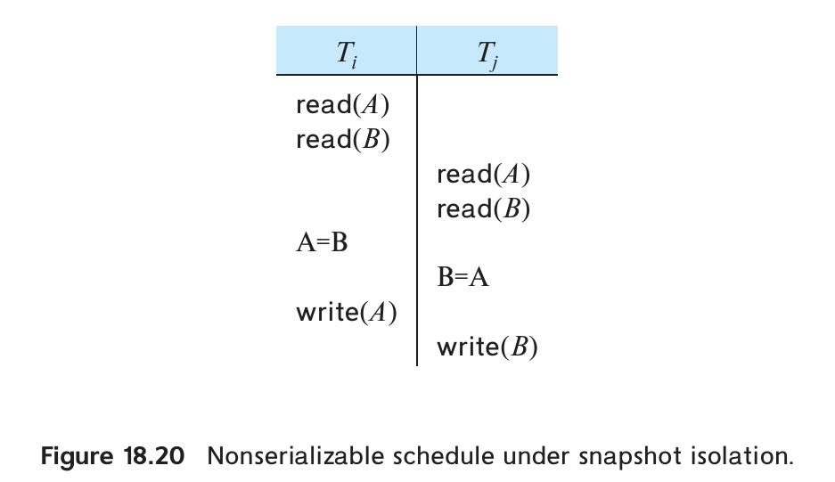
图 18.20 两个事务各自读取 A、B，却更新不同数据项。
图 18.20 中，Tᵢ、Tⱼ 都读取 A、B。Tᵢ 令 A = B 并写 A，Tⱼ 令 B = A 并写 B。各自的快照都看不到对方更新，但由于写的是不同数据项，无论采用哪一种胜出规则，两者都能提交。
执行结果是交换 A、B 的原值。任何串行执行却都会使 A、B 相等，具体等于哪个初值取决于事务顺序。因此该调度不可串行化。
优先图中也存在环：Tᵢ 读取 Tⱼ 写 B 之前的旧 B，形成 Tᵢ → Tⱼ；Tⱼ 读取 Tᵢ 写 A 之前的旧 A，形成 Tⱼ → Tᵢ。
原书此段把两条边所对应的 A、B 写反了；这里按图 18.20 中各事务的实际写入对象说明。
一对事务分别读了对方将写的数据，写集却互不相交，这称为写偏斜（write skew）。
再看银行账户。约束要求同一客户的支票账户与储蓄账户余额之和不得为负。初始余额分别为 100 和 200 美元。T₃₆ 先读取两个余额检查约束，再从支票账户取出 200 美元；同时 T₃₇ 也先检查约束，再从储蓄账户取出 200 美元。各事务只看自己的快照，都认为取款后总余额为 100 美元，符合约束。
由于更新的是不同账户，两事务没有写写冲突，快照隔离允许它们都提交。
两者提交后，总余额实际为 −100 美元，违反约束；任何串行执行都不会出现这个结果。
原书该句印为“$100”，漏掉了负号；由 100 + 200 − 200 − 200 可得 −100。
另一个例子是连续单据编号：取当前最大编号加 1，作为新单据号。两个并发事务会从快照中看到相同的最大值，产生相同编号，却因插入不同元组而都通过快照隔离验证。这个结果无法由串行执行产生，重复单据号还可能造成严重的法律问题。
这也是 18.4.3 节的幻读现象：每个事务的插入都与另一个事务查找最大编号的读取冲突，但普通快照隔离没有识别这种冲突。5
这些例子并不意味着快照隔离毫无实用价值。原书指出，实际可串行化问题相对少见，主要有两方面原因。
- 完整性约束会按提交时的当前状态检查，避免许多不一致。例如，单据号若声明为主键，数据库就会检测重复并回滚其中一个事务。研究曾表明，TPC-C 基准中的事务在主键约束保护下，采用快照隔离也不会发生上述不可串行化问题。不过，异常确实可能发生，出现后仍须处理。6
- 某些事务虽可能在部分数据上发生写偏斜，却会在另外的数据项上产生写冲突。
这种额外冲突阻止它们同时完成，使执行结果仍可串行化。
某些应用能容忍偶发的不可串行化。例如，选课系统先统计人数再允许注册，快照隔离可能使选课人数略超上限；若极少发生，多一名学生通常影响有限。对这类应用，长查询不阻塞更新的收益，可能足以接受偶发异常。
财务等应用通常无法接受这类异常，可考虑：
- 数据库支持时，使用可串行化快照隔离。
- 让不同事务使用适当的不同隔离级别。
- 利用
for update等 SQL 扩展，主动建立需要的冲突关系。
下面分别说明。
PostgreSQL 从 9.1 起引入可串行化快照隔离，并结合索引相关的冲突检测，防止幻读导致的不可串行化。
可串行化快照隔离（SSI）可以从优先图理解。跟踪事务间的写写、读写、写读冲突，若 T₁ 的冲突操作先于 T₂，就画出 T₁ → T₂。按 17.6 节的方法，检测环并回滚事务，可以保证可串行化。
普通快照隔离漏掉了一类读写冲突：T₁ 写入新版本，T₂ 随后仍读取旧版本。虽然实际读取发生得晚，串行化依赖却指向 T₂ → T₁。
研究证明，快照隔离允许的不可串行化调度中，一定存在一个事务，同时具有入向和出向的读写冲突边。
其他类型的环已由普通快照隔离规则排除。SSI 跟踪并发事务间的读写冲突，发现这种结构时回滚其中一个事务。它比保存全部冲突再检测环便宜，但也可能触发不必要的回滚。
PostgreSQL 用于防范幻影冲突的索引锁并不遵循两阶段持锁方式。它们用于记录潜在冲突，事务提交后还可能保留一段时间，以便检查尚未结束的并发事务；这些记录也不会造成死锁。
SQL Server 允许部分事务使用快照隔离，另一些使用可串行化隔离。原书建议，让长只读事务使用快照隔离、更新事务使用可串行化隔离，可避免只读事务阻塞更新，并规避前述更新异常。
这不能推广成“只读事务采用普通快照隔离时，整个工作负载一定可串行化”。只读事务也可能参与序列化异常；严格要求包括读取结果在内的整体可串行化时，应使用 SSI 或满足安全快照条件。参见 Ports 与 Grittner 论文第 4 节。
按本书写作时的说明，至少到 Oracle 12c，以及 PostgreSQL 9.1 之前，名为 serializable 的隔离级别实际采用普通快照隔离。因此，仅设置这个名称，并不意味着系统一定拒绝所有不可串行化调度。此处版本描述保留原书历史语境。
在一些数据库中，应用必须使用快照隔离时，可以在查询后加 for update，预防某些异常：
select *
from instructor
where ID = 22222
for update;
并发控制会把这些读取的数据视为需要更新的数据。图 18.20 中，若读取 A、B 的查询都加上该子句，就相当于两事务都要更新 A、B，只有一个可以提交。
已有形式化方法能分析给定事务集合是否可能在快照隔离下不可串行化，并确定应通过 for update 等方式增加哪些冲突，见在线参考资料。这要求预先知道可能执行的事务类型。固定事务集合可以分析；若允许任意临时事务，就无法这样预先穷尽。
18.9 实际系统中的弱一致性级别
17.8 节介绍了 SQL 标准的可串行化、可重复读、读已提交和读未提交。下面介绍一些较早的一致性术语及其与 SQL 级别的关系，再讨论跨用户交互的并发控制。
18.9.1 二级一致性
二级一致性（degree-two consistency）旨在避免级联中止，并不保证可串行化。它仍使用共享锁 S 和排他锁 X，访问数据必须持有相应的锁，但不要求两阶段行为。
共享锁可以随时释放，事务也可以随时取得新锁；排他锁必须保持到提交或中止。事务两次读取同一数据项可能得到不同值。图 18.21 中，T₃₂ 在 T₃₃ 写 Q 前后各读取一次。
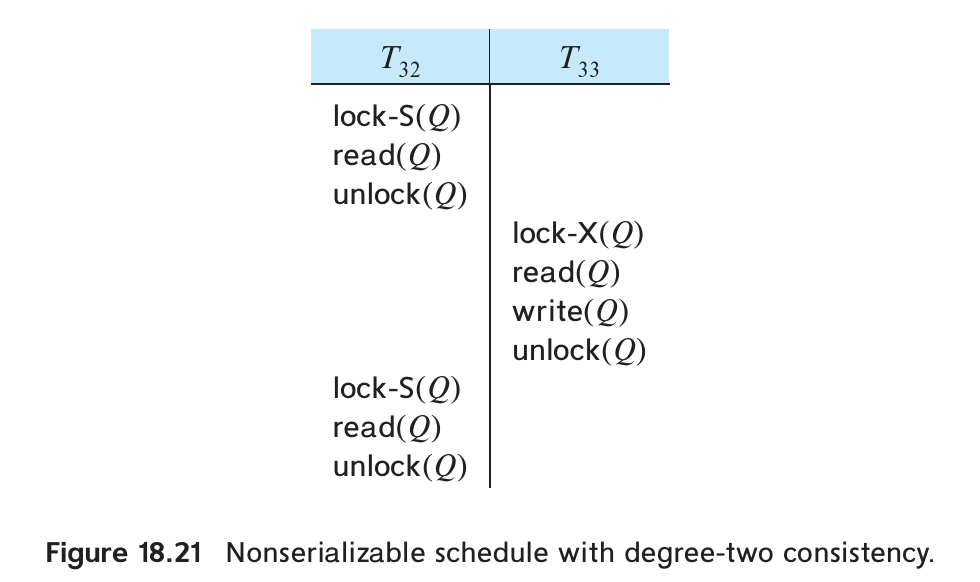
图 18.21 共享锁提前释放后，同一事务再次读取可能得到新值。
虽然不能重复读，但排他锁保持到事务结束，其他事务不会读到未提交值。因此，二级一致性是读已提交的一种实现。
采用二级一致性扫描索引时，并发更新甚至可能使扫描读到同一记录的两个版本，或者完全漏掉该记录。
例如，r(A, B, C) 以 A 为主键，B 上有索引。查询沿 B 索引扫描，同时另一个事务把 t₁.B 从 v₁ 改成 v₂，需要删除旧索引项并插入新索引项。扫描可能在旧项已删后访问 v₁ 所在结点，又在新项尚未插入前访问 v₂ 所在结点，于是完全漏掉 t₁；也可能先读旧项，随后再读到新项，使同一记录出现两次。如果扫描和更新都遵守两阶段锁，就不会出现这个问题。
18.9.2 游标稳定性
游标稳定性是为逐元组遍历设计的一种二级一致性。它不锁整个关系，而遵循两条规则：
- 给游标当前处理的元组加共享锁，处理完即可释放。
- 修改过的元组保持排他锁，直到事务提交。
这能提供二级一致性，但因不遵循两阶段规则，仍不保证可串行化。对访问频繁的关系，游标稳定性可提高并发和性能。应用必须自行保证，即使调度不可串行化，数据库仍满足一致性要求，因此通常只适用于约束较简单的特定情形。
数据库支持时，快照隔离通常可作为二级一致性和游标稳定性的替代：并发程度相近或更高，同时减少不可串行化执行的风险。
18.9.3 跨用户交互的并发控制
通常的协议假定事务不包含用户交互。回看 17.8 节的航空选座例子：若从显示可选座位到用户确认选择都放在同一个事务中，会怎样？
采用两阶段锁时，航班座位集合可能一直保持共享锁，直到用户完成选择，其他事务便无法更新座位分配。
用户可能思考很久，或直接离开而未取消。时间戳或验证协议虽然避免长时间持锁，但只要另一用户更新了读取过的座位信息，就可能让本事务中止，即使两人选的座位不同。快照隔离更合适：只要没有选中同一座位，就无需因写冲突中止。
不过，只要并发事务仍未结束，快照隔离就需要保留有关已提交更新的信息，持续很久的交互事务仍可能造成负担。
另一种办法是使用两个或更多短事务，使每个数据库事务都不跨越用户交互。第一个事务读取可选座位，第二个事务分配选中的座位。但第二个事务必须重新检查该座位是否已被他人分配；若直接写入，就会造成丢失更新。
这个思路可以推广为基于版本号的并发控制：每个关系增加 version_number 属性，元组创建时初始化为 0。应用首次读取将来要更新的元组时，记住其版本号；读取本身作为独立数据库事务，立即释放锁。修改先保存在本地，提交时再用一个数据库事务原子地完成下列步骤。
对每个修改过的元组，比较当前版本号与最初读取的版本号：
- 相同则写入更新，并把版本号加 1。
- 不同则中止，回滚本次提交中已经执行的全部更新。
所有修改元组都通过版本检查后，事务才提交。也可以用时间戳代替版本号，方案不变。
这个方案与快照隔离很相近：版本号检查实现了先提交者胜出，即使应用事务持续很久也能使用。但它读取的数据未必来自同一数据库快照，也没有像完整的验证协议那样检查读集。
因此称为不验证读取的乐观并发控制。它提供较弱的隔离保障，不保证可串行化。若提交时也验证读过的元组版本，确保它们自最初读取后未被修改，就得到前述完整的乐观并发控制。
应用开发者常用这种办法处理用户交互，因为可以直接建立在现有数据库之上：把验证和更新放在一个数据库事务中，利用数据库本身保证这段提交处理的原子性。Hibernate（9.6.2 节）等对象关系映射系统也采用它，通常称作乐观并发控制，即使默认并不验证读取。框架在提交时自动检查版本号。Hibernate 把跨用户交互的长过程称为 conversation，以区别于普通数据库事务，版本验证对此很有用。
开发者必须了解可能出现不可串行化执行，只在这类结果不会造成严重问题的场景采用不验证读集的方案。
18.10 并发控制的进阶主题
索引可以使用专门的并发协议提高并发程度；内存数据库中的索引加锁则可以适当简化。在内存数据库中，并发控制本身常成为瓶颈，无闩锁数据结构等技术可以降低开销。还可以把计数器递增等操作作为并发控制单位，按操作语义判断冲突。某些应用对事务完成时间有要求，也需要专门的并发控制方法。
18.10.1 在线创建索引
面对 TB 级数据，创建索引可能需要数小时甚至数天。创建结束时，索引必须与关系内容一致，之后的所有关系更新也必须维护索引。
一种简单办法是创建期间阻止关系更新，例如取得关系共享锁。索引创建完成、元数据登记新索引后再释放锁，后续更新事务看到索引后便维护它。
但长时间禁止更新通常无法接受。因此，多数数据库支持在线创建索引，允许建索引期间继续修改关系。流程如下。
- 取得关系快照，在快照上建立索引，同时记录快照之后发生的全部更新。
- 初步索引建好后，用更新日志补齐变化。此时关系仍可继续更新，日志也会继续增长。
- 最后取得关系共享锁，暂时禁止更新，把剩余日志应用到索引。索引与关系一致后，在元数据中登记新索引，再释放锁。此后执行的事务看到新索引，更新关系时也维护它。
需要即时维护的物化视图也可以类似构建：先在参与关系的快照上执行视图查询，记录后续更新，再把更新应用到视图，最后短暂加锁并补齐剩余变化。
增加、删除属性或约束等模式变更，如果实施期间一直锁住关系，也会影响业务。
- 增删属性时，可以给每个元组记录模式版本号，在后台或访问元组时逐步转换；版本号用于判断该元组是否已采用新模式。
尚未转换的元组再执行相应变更。
- 增加约束时，必须检查已有数据。例如，为 ID 增加主键或唯一约束，需要确认不存在重复值。在线增加约束可先检查快照，并记录后续更新，再检查日志中的变化；最后取得关系共享锁，检查剩余更新，把约束登记到元数据。
18.10.2 索引结构中的并发控制
索引也可以采用普通数据库结构的并发控制，但索引访问频繁，容易形成锁争用。为了提高并发，可提前释放索引结点锁，不必一直保持到事务结束。同一事务两次查询索引之间，索引结构可以变化，只要查询返回正确的元组集合。换言之，事务级别访问索引的物理步骤不必保持通常的串行执行形式，但各次索引操作本身仍必须正确。
索引操作可串行化的定义是：并发索引操作的每次返回结果，以及全部操作后的最终索引状态，都与某个串行操作顺序一致。索引并发控制必须保证这个性质。
下面介绍两种 B⁺ 树并发访问技术，以及防范幻读的索引技术。其他索引结构和 B⁺ 树方法见在线参考资料。以下两种方法都采用锁，但既不用普通两阶段锁，也不用前述树协议；只需略微修改第 14 章的查找、插入、删除算法。
第一种是蟹行协议（crabbing protocol）。查找时，先给根结点加共享锁；向下访问前，先给子结点加共享锁，然后释放父结点锁，重复到叶结点。
插入或删除时：
- 先像查找一样向下，到达目标叶结点；沿途只取得和释放共享锁。
- 给叶结点加排他锁，执行插入或删除。
- 若需要分裂、与兄弟合并或重新分配键值，给父结点加排他锁。完成这些操作后，释放当前结点和兄弟结点的锁。
- 若父结点也需要分裂、合并或重新分配，保留父结点锁，以同样方式继续向上；否则释放父结点锁。
协议名称来自螃蟹交替移动两侧足的动作：下行查找或上行调整时，锁都以交替取得、释放的方式推进。
某次操作释放结点锁后，其他操作便能访问该结点。向下的查找与向上传播的结构调整可能死锁；可以释放查找操作持有的锁，并从根重新开始查找来处理。
这种短时间持有、无需遵循两阶段规则的内部锁，常称为闩锁（latch），用于保护共享数据结构。上面的协议没有把整个插入或删除过程独占锁住，但仍保证索引操作可串行化。
第二种方法进一步避免“持有一个结点锁时等待另一个结点锁”，从而消除死锁并提高并发。它使用 B-link 树：每个结点，包括内部结点，都保存指向右兄弟的指针。查找遇到并发分裂时，可能还需沿右指针搜索分出去的结点。
B-link 树协议同一时刻只持有一个内部结点的锁。下行请求子结点锁，或分裂、合并时上行请求父结点锁之前，都先释放当前锁。但这也会出现变化窗口：释放结点锁到取得父结点锁之间，并发操作可能使父结点发生分裂或合并，原父结点不再是该结点的父亲。
协议必须识别并处理这些情况，在避免操作间死锁的同时，保证操作可串行化，并获得比蟹行协议更高的并发度。
18.4.3 节通过按两阶段规则锁住索引叶结点，防止谓词读取与插入、更新之间的幻影冲突。更细的键值锁只锁单个键值，让同一叶结点的其他键仍可插入或删除，提高并发。
但仅锁实际存在的键还不够，需要临键锁（next-key locking）。范围查询除了锁范围内的键，还要锁紧邻范围之后的下一个键；点查询也适用。插入既锁插入值，也锁其后一个键。这样，插入值若落在另一事务查询的范围内，二者就会在后一个键上冲突。删除同样要锁被删值之后的键，以便与之后的范围查询建立正确冲突关系。
18.10.3 内存数据库的并发控制
数据放在硬盘时，I/O 往往占据主要成本，优化较小的并发控制开销收益有限。内存数据库没有这个主要瓶颈，降低其他成本就更有价值；15.8 节讨论过查询处理，本节讨论并发控制。
磁盘索引通常逐结点加锁以增加并发，但每次取锁也有开销。内存索引操作耗时很短，可以考虑用一把闩锁锁住整个索引，完成操作后立即释放。某些负载下，减少取锁开销足以抵消并发度的略微下降，整体性能也可能提高。
还可以利用原子指令更新内存索引，完全省去闩锁。
不依赖闩锁而支持并发操作的数据结构，称为无闩锁数据结构。
例如，链表结点包含 value 和 next，head 指向表头。不发生并发插入时，图 18.22 的函数可以正确插入新表头。7
insert(value, head) {
node = new node
node->value = value
node->next = head
head = node
}
图 18.22 并发插入时不安全的链表插入代码。
两个进程同时插入时，可能读到同一个旧 head，再各自修改 head。最终只保留其中一个新结点，另一个丢失。
可以在调用 insert 前取得链表排他闩锁，完成后释放。
另一种方法是原子比较并交换（compare-and-swap，CAS）指令，实际中可以更快。CAS(var, oldval, newval) 原子地检查 var 是否等于 oldval：相等则改为 newval 并返回成功，否则返回失败。许多现代处理器都支持这种快速指令。
图 18.23 的 insert_latchfree 在不取闩锁的情况下支持并发插入。若两个进程读到相同旧 head 后都执行 CAS，第一个成功，另一个因 head 已变化而失败。失败者重新读取 head 并重试，直到成功。
delete_latchfree 同样用 CAS 从表头删除，使这个链表按栈使用。不过，它还有一个并发问题。
insert_latchfree(head, value) {
node = new node
node->value = value
repeat
oldhead = head
node->next = oldhead
result = CAS(head, oldhead, node)
until (result == success)
}
delete_latchfree(head) {
/* 此函数尚不完全安全，见下文说明。 */
repeat
oldhead = head
newhead = oldhead->next
result = CAS(head, oldhead, newhead)
until (result == success)
}
图 18.23 链表的无闩锁插入和删除伪代码。
设 P₁ 准备删除表头 n₁，已经读到 n₁ 以及下一个结点 n₂。此时 P₂ 删除 n₁、n₂，又把 n₁ 插回表头，但它的后继已经变成 n₃。P₁ 随后执行 CAS，发现 head 仍是 n₁，误以为没有变化，成功把 head 改为已经删除的 n₂，破坏链表。这就是 ABA 问题。
一种解决办法是为指针附加计数器，每次改指针都递增计数，并对“指针、计数器”二元组执行 CAS。原书指出，许多 64 位处理器支持相应的 128 位双字比较交换。n₁ 虽重新成为表头，计数器却不同，P₁ 的 CAS 就会失败。练习 18.16 的在线解答给出细节。这样可支持并发插入、删除；也有不依赖双字 CAS、但更复杂的方案。
这里是算法伪代码。实际实现还需处理空链表、结点生命周期和内存回收；给指针加计数不能单独解决已释放内存仍被访问的问题。内存回收的独立要求可参见 Michael 的研究。
从表尾删除以实现队列，以及散列索引、搜索树等更复杂的数据结构，也可以采用无闩锁实现。
这类实现也常称为无锁数据结构。原书建议优先使用已有库，例如 C++ 的 Boost 或 Java 的 ConcurrentLinkedQueue，避免自行编写时引入难以发现和调试的并发竞态。
在多核处理器上，无闩锁的内存索引及其他内存数据结构，在一些负载下明显优于使用闩锁的实现。
18.10.4 长时间事务
事务概念最初来自以短时、非交互处理为主的应用。直接应用到包含人机交互的数据库时，会遇到以下问题。
- 持续时间长。 人的反应比计算机慢，交互事务对计算机而言已是长事务；设计类应用甚至持续数小时、数天或更久。
- 暴露未提交数据。 显示给用户的数据来自尚未结束、仍可能中止的事务。用户及其触发的其他事务可能已经使用这些数据；协作项目也可能要求提交前交换结果。
- 子任务。 一个交互事务可包含多个用户发起的子任务，用户可能只想取消其中一个，无需撤销全部工作。
- 可恢复性。 系统崩溃后，不能简单中止整个长事务，必须恢复到接近崩溃前的状态，尽量少丢失人工工作。
- 性能。 非交互系统常以吞吐量衡量性能，强调资源利用率；交互系统中，用户时间更宝贵，因此需要快速响应。对于本来就耗时的任务，响应时间还应稳定可预测。
较小的响应时间波动，便于用户安排时间。
18.8 节的快照隔离和 18.9.3 节不验证读取的乐观并发控制，都能部分解决这些问题。后者正是面向跨用户交互的长过程设计，虽然不保证可串行化，仍得到广泛应用。
事务持续越久，越容易遇到冲突更新，增加等待或中止。因此，下面进一步讨论不同的并发正确性与恢复方式。
18.10.5 基于操作的并发控制
设银行数据库只有账户 A、B，要求总额 A + B 不变。图 18.24 的调度不满足冲突可串行化，却仍保持总额。它说明，在可串行化之外讨论正确性时，需要考虑两个因素。
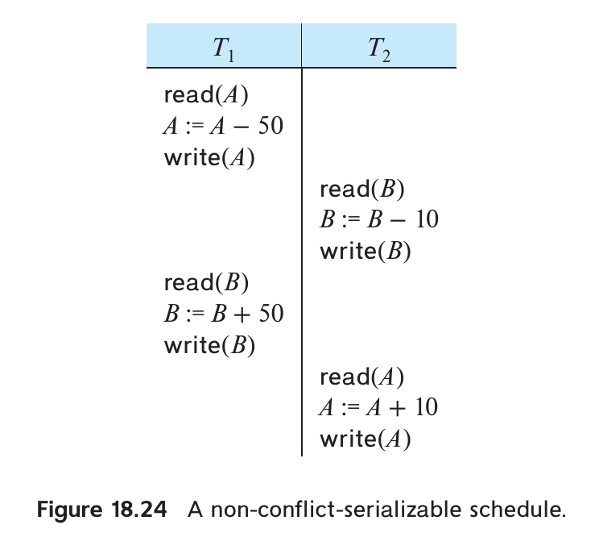
图 18.24 两个方向的转账交错执行，但账户总额保持不变。
- 数据库具体的一致性约束。
- 各事务所执行操作的性质。
大量事务争用同一数据项时，两阶段锁虽然保证可串行化，却可能使并发度很低。时间戳和验证协议也有类似问题。
可以把读写以外的某些操作也作为基本操作，依据其语义实施并发控制。
例如，16.5.1 节的即时物化视图维护：关系 sales(date, custID, itemID, amount) 对应视图 daily_sales_total(date, total_amount)，记录每日销售总额。每笔销售事务都要更新当天同一条汇总记录，若用两阶段锁，交易量大时并发度会很低。
每个事务其实只需给总额增加 n，并不需要读取总额。定义 increment(v, n)：给 v 加 n，但不把 v 的值返回给事务。插入金额为 n 的销售记录时，对当天视图记录的 total_amount 执行该操作。
这个操作不按两阶段方式持锁，但对同一变量的单次递增必须原子地串行执行。可以先取排他闩锁，更新后立即释放；也可以用 CAS 实现。
两个事务的递增操作可以交错，因为相加顺序不影响最终结果，二者在操作语义上不冲突。事务若回滚，执行 increment(v, −n) 撤销原先的增加；这种逆向动作称为补偿操作。
若事务 T 要读取汇总值，它仍与并发递增事务冲突：读到多少，取决于递增事务在串行顺序中位于 T 的前面还是后面。
因此可以增加增量锁 I：它与自身相容，但与共享锁、排他锁不相容。相容矩阵见图 18.25。
| 已持有的锁 / 请求的锁 | S | X | I |
|---|---|---|---|
| S | 相容 | 不相容 | 不相容 |
| X | 不相容 | 不相容 | 不相容 |
| I | 不相容 | 不相容 | 相容 |
图 18.25 包含增量锁的相容矩阵。
B⁺ 树插入也是基于操作的并发控制例子。内部结点锁可提前释放，再结合叶结点的两阶段锁或临键锁保证事务可串行化。插入可能修改多个结点，其他事务随后又访问、修改这些结点。回滚时应通过删除插入记录来补偿，而非把全部物理结点恢复旧貌。最终 B⁺ 树正确且一致，结构却未必与原来完全相同。
基于操作的控制也可能用于允许部分不可串行化的场景。例如售票时，定义 increment_conditional(v, n)：只有 v + n ≥ 0 才更新并返回成功，否则返回失败。变量 avail_tickets 记录余票，购买三张票执行 increment_conditional(avail_tickets, −3)。成功表示余票充足且已扣减，失败表示余票不足。
若对余票采用两阶段锁，即使票很多，后来的顾客也得等前一笔交易提交。可以只在执行条件递增时短暂取得排他锁，操作完成立即释放，增加并发。
售票事务还需收款等后续步骤。若付款失败，就执行补偿操作：原来扣 n 张，再加回 n 张。
但条件递增与普通递增不同，两个操作并非总能交换顺序。
假设只剩一张票，两事务各买一张，谁先执行决定谁成功。因此操作间确实存在语义冲突。不过，许多实际应用仍用这种短时加锁、操作后释放的方法，以接受部分不可串行化结果为代价提高并发。
18.10.6 实时事务系统
工厂管理、交通控制、调度等应用还要求任务在截止时间前完成。此时正确性除了数据库一致性，还涉及错过多少截止时间，以及延迟多久。截止期限有以下类型。
- 硬截止期限（hard deadline）：未按时完成可能造成系统崩溃等严重后果。
- 严格截止期限（firm deadline）：超过期限再完成，任务价值为零。
- 软截止期限（soft deadline）：迟到仍有价值，但越晚价值越低，逐渐趋近于零。
具有这类期限要求的系统称为实时系统。
实时事务管理必须考虑期限。让 Tᵢ 等锁可能导致它超时，有时应抢占持锁事务，让 Tᵢ 继续。但被抢占事务因回滚、重启损失时间，也可能错过自己的期限。实际很难统一判断哪种选择更好。
磁盘访问延迟不易预测，因此实时系统常采用内存数据库。但锁等待、事务中止仍会造成执行时间波动。相关研究扩展锁协议，提高临近期限事务的优先级，也发现某些实时负载下，乐观协议比扩展后的锁协议错过的期限更少。更多研究见在线参考资料。
18.11 小结
- 多事务并发执行可能破坏数据一致性，系统需要通过并发控制协议约束事务间的交互。
- 并发控制通过延迟操作或中止事务等方式保证可串行化，常见方案包括锁协议、时间戳排序、验证和多版本。
- 锁协议规定事务何时能取得和释放各数据项的锁。
- 两阶段锁要求事务只有在尚未释放任何锁时才能继续取得新锁，保证可串行化但不保证无死锁。在不了解事务访问方式的通常加锁模型中，要对任意访问保证冲突可串行化，需要两阶段约束。
- 严格 2PL 将排他锁保持到事务结束，保证可恢复且无级联回滚；强严格 2PL 则将全部锁保持到事务结束。
- 可以规定数据项顺序，并按相同顺序申请锁，以避免死锁。
- 也可根据事务时间戳决定等待、抢占或回滚；伤害—等待是抢占式协议。
- 未预防死锁时，需要构造等待图检测环，再回滚一个或多个事务解除死锁。
- 多粒度加锁把小数据单位嵌入大单位，组成层次树。取得锁自顶向下，释放锁自底向上；高层的意向锁在保证可串行化的同时提高并发。
- 时间戳排序预先为事务确定唯一顺序；遇到违背该顺序的操作时回滚事务，保证产生的调度与时间戳顺序的串行执行等价。
- 验证协议适合只读事务多、冲突率低的负载。事务先执行，完成前必须通过验证，否则回滚；以验证时间戳确定串行顺序。
- 多版本协议为写入创建新版本，读取时按时间戳选择版本，以保证相应协议要求的可串行化。读取总能取得合适版本。
多版本时间戳排序可能因写入而回滚；多版本两阶段锁的写入可能等待锁，也可能出现死锁。
- 快照隔离结合多版本与验证，事务无需预先声明为只读或更新。普通快照隔离不保证可串行化，SSI 扩展则能保证。
- 加锁协议下，删除前必须持有元组排他锁；插入后也取得新元组的排他锁。
- 插入可能与查询发生幻影冲突，即使二者没有访问共同元组。必须保护查找元组所用的信息；索引加锁把这种冲突落实为实际索引结点上的锁冲突。
- 若应用不要求严格一致的查询结果，而可串行化会使查询干扰事务处理，可以使用较弱的一致性。二级一致性是一例，游标稳定性是它的特例。
- 跨用户交互的并发控制可以在应用层通过元组版本号验证更新，数据库无需修改，但仅验证更新不保证可串行化。
- B⁺ 树等结构可以采用专门协议提高并发，允许物理结构在事务间交错变化，同时保证索引操作正确，并结合事务级控制保证数据库访问可串行化。内存数据库还可用无闩锁结构实现高性能索引。
复习术语
- 并发控制（concurrency control）
- 锁类型：共享锁 S、排他锁 X
- 锁：相容性、请求、等待、授予
- 死锁、饥饿、锁协议、合法调度
- 两阶段锁：增长阶段、收缩阶段、锁点、严格两阶段锁、强严格两阶段锁
- 锁转换：升级、降级
- 基于图的协议：树协议、提交依赖
- 死锁处理：预防、检测、恢复
- 死锁预防：有序加锁、锁抢占、等待—死亡
- 伤害—等待、基于超时的方案
- 死锁检测：等待图
- 死锁恢复：完全回滚、部分回滚
- 多粒度
- 显式锁、隐式锁、意向锁
- 意向锁模式：意向共享 IS、意向排他 IX、共享意向排他 SIX
- 多粒度加锁协议
- 时间戳
- 系统时钟、逻辑计数器、W-timestamp(Q)、R-timestamp(Q)
- 时间戳排序协议、Thomas 写规则
- 基于验证的协议
- 读阶段、验证阶段、写阶段、验证测试
- 多版本时间戳排序
- 多版本两阶段锁：只读事务、更新事务
- 快照隔离
- 丢失更新、先提交者胜出、先更新者胜出、写偏斜、select for update
- 插入与删除操作
- 幻读现象、索引加锁协议、谓词加锁
- 弱一致性级别：二级一致性、游标稳定性
- 不验证读取的乐观并发控制
- 交互会话（conversation）
- 索引并发控制
- 蟹行协议、B-link 树、B-link 树加锁协议、临键锁
- 无闩锁数据结构
- 比较并交换指令 CAS
练习
18.1 证明两阶段锁保证冲突可串行化，并且事务可以按锁点顺序串行化。
18.2 考虑以下事务：
T34: read(A);
read(B);
if A = 0 then B := B + 1;
write(B).
T35: read(B);
read(A);
if B = 0 then A := A + 1;
write(A).
加入加锁和解锁指令，使这两个事务遵守两阶段锁。执行时可能发生死锁吗？
原书此处把事务编号写成 T₃₁、T₃₂，题目实际列出的是 T₃₄、T₃₅。
18.3 强严格两阶段锁有什么好处？它与其他两阶段锁变体有何差异？
18.4 数据库按有根树组织，在每对相邻顶点之间插入一个虚拟顶点。证明在新树上执行树协议，比在原树上执行树协议允许更多并发。
18.5 分别举例说明：树协议允许某些两阶段锁不允许的调度，反过来也一样。
18.6 持久化编程语言通常不显式加锁，而在访问对象时锁住对象或所在页。现代操作系统允许设置页面的无访问、只读、可写权限，违反权限的访问会触发保护异常，例如 Unix 的 mprotect。说明如何用页面保护机制实现持久化语言的页级加锁。
18.7 数据库除了 read、write，还支持原子操作 increment(X) by C。设 X 原值为 V。
该操作原子地把 X 改为 V + C，但除非另行执行 read(X)，事务看不到 X 的值。假设递增操作按图 18.25 取得增量锁。
a. 证明：若事务对访问的数据都取得相应模式的锁，两阶段锁仍保证可串行化。
b. 说明增量锁如何增加并发。
18.8 W-timestamp(Q) 定义为成功写 Q 的事务中的最大时间戳。若改成“最近一次成功写 Q 的事务的时间戳”，含义会改变吗？说明理由。
18.9 多粒度加锁所需的锁数，可能比等价的单粒度系统更多，也可能更少。分别举例，并比较允许的并发程度。
18.10 分别说明哪些实际应用特征适合或不适合以下协议：
- 两阶段锁；
- 结合多粒度的两阶段锁；
- 树协议；
- 时间戳排序；
- 验证协议；
- 多版本时间戳排序；
- 多版本两阶段锁。
18.11 先像验证协议一样执行事务，不取锁、不实际写数据库；但第一次执行完也不验证和写回，而是改用严格两阶段锁重新执行整个事务。为什么这种方法可能比直接采用严格两阶段锁更快？提示：考虑磁盘 I/O 等待。
18.12 采用时间戳排序，一个事务写 p、q，另一个事务读取 p、q。
给出一个调度，使写操作的时间戳检查失败，导致第一个事务重启，并使另一个事务级联中止。说明二者如何因此饥饿。两个或多个进程不断执行动作，却因相互影响始终无法完成任务，这称为活锁。
18.13 设计一个能避免幻读现象的时间戳协议。
18.14 用 18.1.5 节的树协议管理 B⁺ 树并发访问。插入可能导致根结点分裂，似乎整个插入结束前都不能释放锁。什么情况下可以提前释放某些锁？
18.15 快照隔离在 T 写数据前，需要检查是否已有并发事务写过同一数据项。
a. 每个事务保存开始时间戳、提交时间戳和更新集合。说明如何据此实现先提交者胜出的验证。假设验证与其他提交步骤一次只处理一个事务。
b. 改为给每个数据项保存写时间戳，不再保存更新集合。说明如何在提交时实现验证，仍假设提交处理串行执行。
c. 先更新者胜出也可利用这些时间戳，但取得排他锁后立即验证。
i. 应如何为数据项分配写时间戳？
ii. 证明有锁保护时，提交阶段再次验证不会改变结果。
iii. 为什么此时不必把所有事务的验证和提交处理串行执行？
18.16 考虑图 18.23 的 insert_latchfree() 与 delete_latchfree()。
a. 解释删除后的结点重新插入时，ABA 问题如何发生。
b. 在 head 旁保存计数器 cnt，并假设 DCAS((head,cnt), (oldhead,oldcnt), (newhead,newcnt)) 能原子比较交换 128 位二元组。修改两个函数，以避免 ABA。
c. 原书假定处理器只用 64 位地址中的 48 位寻址。若不支持 DCAS，说明如何用其余 16 位作为计数器。
第 c 问是题设中的地址模型，实际可用地址位数和高位使用规则取决于处理器与操作系统；有限计数器也要考虑回绕。
习题
18.17 严格两阶段锁有哪些好处，又有哪些代价？
18.18 原书指出许多数据库采用严格两阶段锁。给出该协议受到广泛采用的三个原因。
18.19 考虑树协议的变体——森林协议。数据库是一组有根树，每个事务遵循：
- 每棵树第一次可以锁任意数据项。
- 同一树的后续锁请求，只能在当前持有父结点锁时发出。
- 数据项可以随时解锁。
- 已释放的数据项不能再次加锁。
证明森林协议不保证可串行化。
18.20 什么情况下，预防死锁比允许死锁发生后再检测的成本更低？
18.21 使用避免死锁的协议后，还可能发生饥饿吗？说明理由。
18.22 多粒度加锁中的隐式锁与显式锁有什么区别？
18.23 SIX 模式有用，但“排他且意向共享”的 XIS 模式没有用途。为什么？
18.24 协议要求给 Q 加 S 或 IS 锁之前，父结点必须持有 IX 或 IS 锁。
既然 SIX 和 S 能提供更强的共享保护，为什么规则没有列出“父结点持有 SIX 或 S”的情况？
18.25 锁层次为数据库、关系、元组。
a. 事务要读取关系 r 的大量元组，应取得哪些锁？
b. 若读完后还要修改少量元组，应取得哪些锁？
c. 若原以为只改少量元组，执行时却发现要改很多，会给锁表造成什么问题？数据库可以怎样处理？
18.26 时间戳排序中的事务回滚后，为何要分配新时间戳，不能沿用旧时间戳？
18.27 举例证明两阶段锁和时间戳协议允许的调度集合互不包含。
18.28 在时间戳协议的一个变体中，读请求要检查提交位，以决定是否等待。说明这如何防止级联中止，以及写请求为何无需同样检查。
18.29 练习 18.15 用时间戳验证实现快照隔离。为什么同样涉及多版本和时间戳，普通快照隔离不保证可串行化，多版本时间戳排序却能保证？指出协议上的决定性差异。
18.30 比较练习 18.15 的基于时间戳、先提交者胜出的快照隔离，与 18.9.3 节不验证读取的乐观并发控制，说明主要异同。
18.31 事务 T 对 r(A, B, C) 使用索引查找最大 A 值，再插入 A 值为最大值加 1 的新元组。
a. 若只给读到的元组加 S 锁、新元组加 X 锁，不加其他锁，两个 T 并发执行时，为什么可能不可串行化？
b. 若 r.A 声明为主键，上述不可串行化结果还能发生吗？说明理由。
18.32 解释幻读现象。为什么即使用了两阶段锁，它仍可能导致错误的并发执行？
18.33 为什么采用二级一致性？它有什么缺点？
18.34 分别给出调度，说明采用键值锁时，若查找、插入或删除没有锁住下一个键，幻影冲突可能无法被检测。
18.35 许多事务同时修改公共数据项，例如支行现金余额，以及私有数据项，例如个人账户余额。如何安排操作顺序，提高并发与吞吐量？
18.36 设所有数据项都有编号；一旦释放某项的锁，此后只能锁编号更大的项。锁可以随时释放，且只用 X 锁。举例证明该协议不保证可串行化。
延伸阅读
Gray 与 Reuter（1993）系统介绍事务处理，包括并发控制概念和实现。Bernstein 与 Newcomer（2009）也从多个方面讨论事务处理和并发控制。
两阶段锁由 Eswaran 等（1976）提出；多粒度加锁来自 Gray 等（1975）；时间戳并发控制与多版本时间戳排序来自 Reed（1983）；验证协议来自 Kung 与 Robinson（1981）；Silberschatz（1982）提出了一种多版本树加锁算法。
二级一致性由 Gray 等（1975）提出。Berenson 等（1995）分析和评论 SQL 隔离级别，并提出快照隔离。Cahill 等（2009）介绍 SSI，Ports 与 Grittner（2012）说明其在 PostgreSQL 中的实现。
Bayer 与 Schkolnick（1977）、Johnson 与 Shasha（1993）研究 B⁺ 树并发。蟹行与 B-link 树方法分别见 Kung 与 Lehman（1980）、Lehman 与 Yao（1981）。ARIES 的键值加锁技术支持高并发索引访问，详见 Mohan（1990）、Mohan 与 Narang（1992）。Faerber 等（2017）综述内存数据库，包括并发控制。Dechev 等（2010）讨论无闩锁数据结构中的 ABA 问题及解决办法。
参考文献
- [Bayer and Schkolnick (1977)] R. Bayer and M. Schkolnick, “Concurrency of Operating on B-trees”, Acta Informatica, Volume 9, Number 1 (1977), pages 1–21. 题名译文：B 树操作的并发控制。
- [Berenson et al. (1995)] H. Berenson, P. Bernstein, J. Gray, J. Melton, E. O’Neil, and P. O’Neil, “A Critique of ANSI SQL Isolation Levels”, In Proc. of the ACM SIGMOD Conf. on Management of Data (1995), pages 1–10. 题名译文：对 ANSI SQL 隔离级别的评析。
- [Bernstein and Newcomer (2009)] P. A. Bernstein and E. Newcomer, Principles of Transaction Processing, 2nd edition, Morgan Kaufmann (2009). 题名译文：事务处理原理，第 2 版。
- [Cahill et al. (2009)] M. J. Cahill, U. Röhm, and A. D. Fekete, “Serializable isolation for snapshot databases”, ACM Transactions on Database Systems, Volume 34, Number 4 (2009), pages 20:1–20:42. 题名译文：快照数据库的可串行化隔离。
- [Dechev et al. (2010)] D. Dechev, P. Pirkelbauer, and B. Stroustrup, “Understanding and Effectively Preventing the ABA Problem in Descriptor-Based Lock-Free Designs”, In IEEE Int’l Symp. on Object/Component/Service-Oriented Real-Time Distributed Computing, (ISORC) (2010), pages 185–192. 题名译文：理解并有效预防基于描述符的无锁设计中的 ABA 问题。
- [Eswaran et al. (1976)] K. P. Eswaran, J. N. Gray, R. A. Lorie, and I. L. Traiger, “The Notions of Consistency and Predicate Locks in a Database System”, Communications of the ACM, Volume 19, Number 11 (1976), pages 624–633. 题名译文：数据库系统中的一致性概念与谓词锁。
- [Faerber et al. (2017)] F. Faerber, A. Kemper, P.-A. Larson, J. Levandoski, T. Neumann, and A. Pavlo, “Main Memory Database Systems”, Foundations and Trends in Databases, Volume 8, Number 1-2 (2017), pages 1–130. 题名译文：内存数据库系统。
- [Gray and Reuter (1993)] J. Gray and A. Reuter, Transaction Processing: Concepts and Techniques, Morgan Kaufmann (1993). 题名译文：事务处理：概念与技术。
- [Gray et al. (1975)] J. Gray, R. A. Lorie, and G. R. Putzolu, “Granularity of Locks and Degrees of Consistency in a Shared Data Base”, In Proc. of the International Conf. on Very Large Databases (1975), pages 428–451. 题名译文：共享数据库中的锁粒度与一致性级别。
- [Johnson and Shasha (1993)] T. Johnson and D. Shasha, “The Performance of Concurrent B-Tree Algorithms”, ACM Transactions on Database Systems, Volume 18, Number 1 (1993), pages 51–101. 题名译文：并发 B 树算法的性能。
- [Kung and Lehman (1980)] H. T. Kung and P. L. Lehman, “Concurrent Manipulation of Binary Search Trees”, ACM Transactions on Database Systems, Volume 5, Number 3 (1980), pages 339–353. 题名译文：二叉搜索树的并发操作。
- [Kung and Robinson (1981)] H. T. Kung and J. T. Robinson, “Optimistic Concurrency Control”, ACM Transactions on Database Systems, Volume 6, Number 2 (1981), pages 312–326. 题名译文：乐观并发控制。
- [Lehman and Yao (1981)] P. L. Lehman and S. B. Yao, “Efficient Locking for Concurrent Operations on B-trees”, ACM Transactions on Database Systems, Volume 6, Number 4 (1981), pages 650–670. 题名译文：并发 B 树操作的高效加锁。
- [Mohan (1990)] C. Mohan, “ARIES/KVL: A Key-Value Locking Method for Concurrency Control of Multiaction Transactions Operations on B-Tree indexes”, In Proc. of the International Conf. on Very Large Databases (1990), pages 392–405. 题名译文：ARIES/KVL：B 树索引多操作事务的键值加锁方法。
- [Mohan and Narang (1992)] C. Mohan and I. Narang, “Efficient Locking and Caching of Data in the Multisystem Shared Disks Transaction Environment”, In Proc. of the International Conf. on Extending Database Technology (1992), pages 453–468. 题名译文：多系统共享磁盘事务环境中的高效加锁与缓存。
- [Ports and Grittner (2012)] D. R. K. Ports and K. Grittner, “Serializable Snapshot Isolation in PostgreSQL”, Proceedings of the VLDB Endowment, Volume 5, Number 12 (2012), pages 1850–1861. 题名译文：PostgreSQL 中的可串行化快照隔离。
- [Reed (1983)] D. Reed, “Implementing Atomic Actions on Decentralized Data”, Transactions on Computer Systems, Volume 1, Number 1 (1983), pages 3–23. 题名译文：分散数据上的原子操作实现。
- [Silberschatz (1982)] A. Silberschatz, “A Multi-Version Concurrency Control Scheme With No Rollbacks”, In Proc. of the ACM Symposium on Principles of Distributed Computing (1982), pages 216–223. 题名译文：一种无需回滚的多版本并发控制方案。
图片署名
本章开篇的帆船照片：© Pavel Nesvadba / Shutterstock。
-
“谓词加锁”最初指同时支持谓词共享锁和排他锁的较复杂协议。本节只给谓词加共享锁的版本，也称为精确加锁（precision locking）。 ↩
-
许多实现会在验证前就创建版本，此时提交时间戳尚未确定，先设为无穷大，验证时再改为正确值。实际实现还有其他优化，这里从略。 ↩
-
为加快版本查找，许多实现除了创建时间戳，还保存下一版本的创建时间戳，作为本版本的失效时间戳。版本在创建到失效之间有效；当前版本的失效时间戳设为无穷大。 ↩
-
也可以采用跟踪事务读集、写集的其他实现。 ↩
-
SQL 标准用“幻读”指谓词读取结果不可重复。有些说法据此认为快照隔离消除了幻读；按本书对“幻影冲突”的定义，这种说法并不适用。 ↩
-
印度理工学院孟买分校的某个财务应用确实多次出现重复单据号，后来由财务审计人员发现。由于这里不展开的复杂原因，该应用没有把单据号设为主键。 ↩
-
此处假设所有参数均按引用传递。 ↩